Start here
What this tab is, how to read the drawings, safety, and the order of work
Ten parts of the Zeeman-EIT bench are made in the lab and not bought as finished instruments: the solenoid, the cell stack, the ITC502 cables, the degaussing coil, a backup current source, the lock-box divider, the fluxgate supply, the RF control box, the AOM platform, and the beam dumps and covers. Each one below has a purpose, a parts list (no prices), tools, dimensioned drawings and wiring schematics, numbered build steps with a check after every step, tests, the usual mistakes, and the items you must still measure or confirm before you cut or solder.
How to read the drawings
Units and scale
Lengths are in millimetres unless a unit is written. The subtitle of each drawing gives its scale (for example “5 px per mm”). Side views of the former and the cell stack are drawn to scale; schematics are not.
Colours
Red: beam, positive supply, heat. Blue: AOM, negative supply, return. Green: reference, thermistor, OK. Orange: feedback, measurement, micrometer. Hatching: cut plastic or metal.
Open and print
Click a drawing to open the full-size SVG in a new tab, then zoom with Ctrl + scroll. On a phone, slide the drawing sideways or tap it. The page prints with each drawing at full width (Ctrl + P), one part per sheet.
Safety for every part
Laser: 795 nm, invisible
The DFB label says Class 4. Wear goggles rated for 795 nm, keep every beam in a dump or a tube (D10), and never look along a beam or at a reflection. Build and test the electronics (D3 to D8) with the laser off.
Mains (only D4)
The degaussing drive uses a variac on the mains. Build it in a closed, earthed metal box with fuses and cable clamps, and only if you are competent to do mains wiring. The alternative with a function generator needs no mains work.
Magnetism
No steel, nickel-plated or magnetic part inside or near the shield: screws, tweezers, connector shells, clips, soldering-iron stands. Test suspect parts with a small compass. Keep magnets, magnetic screwdrivers and phones away from the shield.
Heat
The cell stack runs at 65 °C and the D4 series resistor dissipates up to 19 W. Put the resistor on a heatsink, away from the shield, and let both cool before you touch them.
RF
The amplifiers give about 1 W (+30 dBm). Never run an amplifier with its output open or shorted, keep SMA connectors tight, and set the attenuator to 31.5 dB before the first power-up.
The ten parts and the order to build them
The order puts the cables and the tests first, so that everything after them can be checked, and the optics last, when the beam path is known. Times are estimates for one person who already solders and are counted without waiting for machining.
| Order | Part | What you make | BOM | Main work | Time | Needs first |
|---|---|---|---|---|---|---|
| 1 | D3 | ITC502 plugs and cables | L03, K04 | two D-sub plugs, cables, dummy-load tests | 4 h | the ITC502 rear panel in front of you |
| 2 | D1 | Solenoid former and winding | C07 | PEEK / Delrin former, 42 turns, two return wires | 8 h + machining | the shield bore, confirmed in writing |
| 3 | D2 | Cell stack | C01 to C04 | bifilar heater, NTC, foam sleeve, two Delrin tubes | 8 h | the cell, the D1 former |
| 4 | D7 | Fluxgate supply and holder | C09 | quiet 5 V supply, PEEK sensor plate | 3 h | the sensor data sheet |
| 5 | D4 | Degaussing coil and drive | C06 | 30-turn coil, variac drive in an earthed box | 6 h | the shield, D7 to check the result |
| 6 | D6 | Lock-box divider | L03, L04 | 100:1 divider in a small BNC box | 1 h | D3 for the ITC502 end |
| 7 | D8 | RF chain and bias box | R01 to R06 | ±5 V and ±3 V rails, DIP control, gate inputs, wiring | 16 h | the Mini-Circuits parts and the synthesizer |
| 8 | D9 | AOM yaw platform and Bragg set-up | M04, O17 | micrometer platform, double-pass alignment | 8 h | the AOMs and the RF chain (D8) |
| 9 | D10 | Beam dumps and covers | O12, M05 | black blocks, hardboard covers | 6 h | the beam path laid out |
| 10 | D5 | Backup current source | C08 | op-amp + MOSFET source, 0 to 25 mA | 4 h | only if the ITC502 output is missing or too noisy |
- Read the “Confirm before you start” box of that part: it lists what the sources did not give (a dimension, a pin number) and that you must read or measure yourself.
- Use non-magnetic tools near the shield and the coil (brass or plastic tweezers, bronze or titanium screwdrivers).
- Keep a build log: date, what you did, the measured value of every check. The checks are the acceptance test of the part.
Solenoid former and winding
The 50 mG bias field along the beams, inside the shield
The solenoid makes the uniform magnetic field along the beams that splits the Zeeman levels: 50 mG gives a two-photon splitting of 70 kHz (1.4 kHz per mG). The EIT line is only about 7 kHz wide, so the field must be the same everywhere in the cell to a fraction of 0.2 % (0.1 mG, a 140 Hz shift). The design below was computed ring by ring with the exact Biot–Savart formula (checked against a brute-force sum to 10⁻¹²) and gives 0.20 % over the cell.
What the design does
- One helical groove in a plastic tube holds the wire exactly: 36 turns at 3.6 mm pitch in the middle and 3 turns at 1.8 mm pitch at each end. The closer end turns make up for the field that falls off at the ends of a finite coil: the error over the cell drops from 0.42 % to 0.20 %.
- Four end turns would give more margin. The design just meets the 0.2 % target at the very ends of the 25 mm path (about half of it on average). Four turns at 1.8 mm at each end (a groove 144 mm long, 44 turns) give 0.15 %: use them if you cannot centre the cell to better than 1 mm.
- Two return wires 180° apart run back along the axis, each carrying half the current. A helix carries a net axial current; a single return wire would add a transverse field of 0.10 mG per mA at the axis, and two wires at 180° cancel it.
- Plastic only (PEEK, Delrin or printed PETG): any steel or nickel near the shield magnetises it and shifts the field by amounts far larger than 0.1 mG.
Parts and materials
| Item | Qty | Specification | Note |
|---|---|---|---|
| Former tube | 1 | PEEK, Delrin (acetal) or printed PETG. Ø38.0 outside, Ø34.0 bore, 160 long, wall 2.0 | one helical groove 0.60 wide × 0.40 deep; no metal inserts |
| Enamelled copper wire | 10 m | Ø0.50 mm bare, Ø0.55 mm enamelled | the coil needs about 6.9 m (helix 4.98 m, 2 returns of 0.15 m, 2 leads of 0.8 m) |
| Spacer rings | 2 | Delrin, Ø45.5 × Ø38.0 × 6 (outer diameter = real shield bore minus 0.5 mm) | glued on the unwound ends of the former, centred 75 mm from the middle (outside the groove, which ends at 70.2) |
| Polyimide (Kapton) tape | 1 roll | 6 mm wide | holds the return wires |
| Epoxy or cyanoacrylate | small | non-magnetic, no metal filler | a drop on the end turns |
| Heat-shrink sleeving | 0.5 m | 2 mm and 4 mm | insulates the solder joints |
| Plug for LD OUT | 1 | D-sub 9-pin plug with plastic hood: see D3 | the start and finish leads twist together and go to this plug |
Tools
- Lathe with a thread-cutting tool, or a CNC lathe or mill, or a 3D printer (the groove is a non-standard 3.6 mm pitch with a 1.8 mm pitch at both ends, so ask the workshop first).
- Digital calliper (0.01 mm), steel rule kept away from the shield, a winding rig: the former on a rod in two supports, turned by hand, with the wire spool on a friction brake (50 to 100 g pull).
- Soldering iron 25 to 40 W, multimeter with a 4-wire resistance range if you have one, brass or plastic tweezers, a small compass to test for magnetic parts.
Drawings
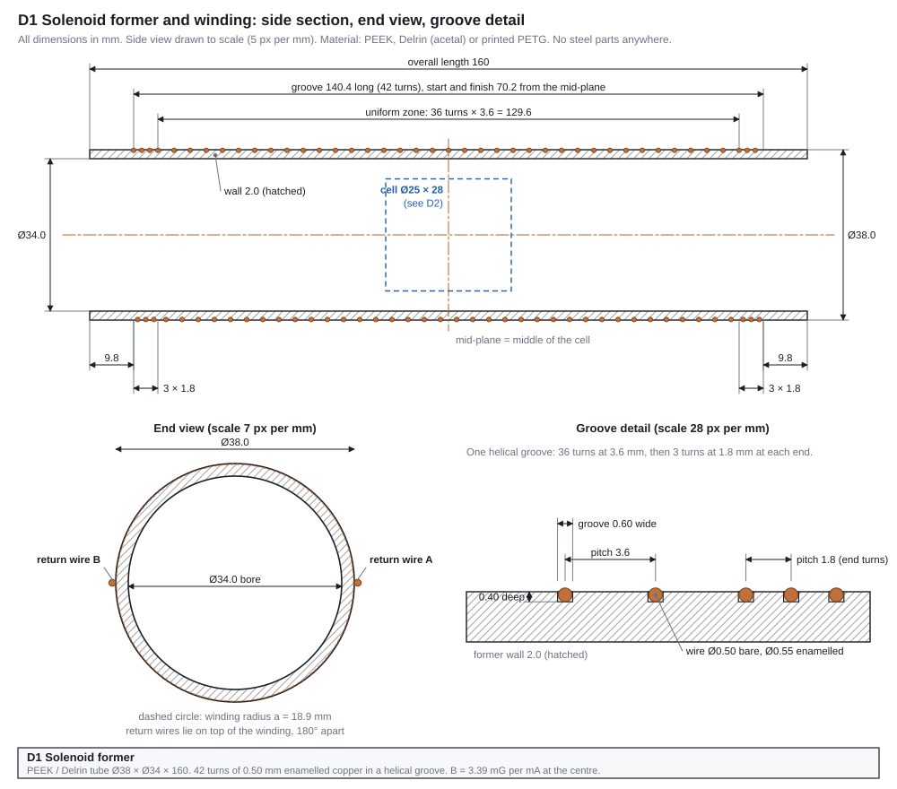
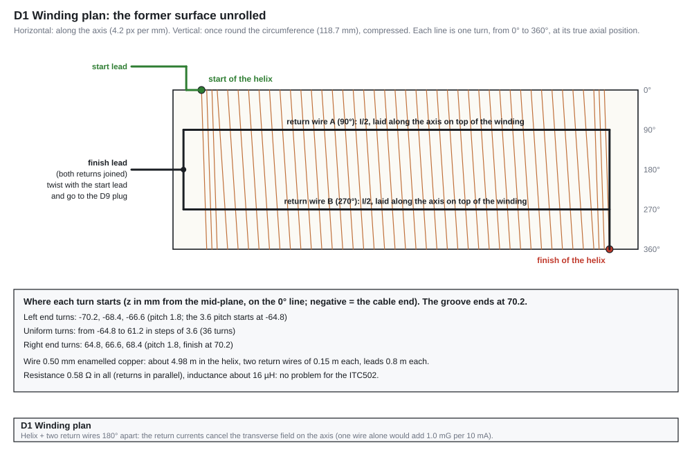
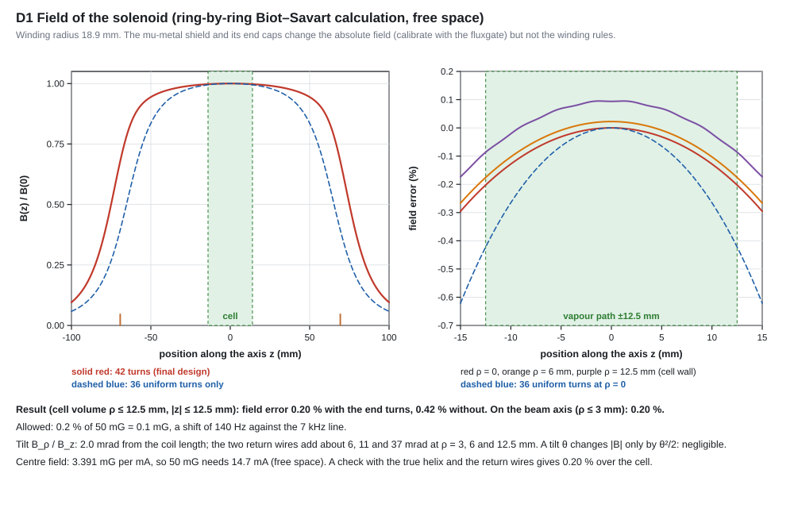
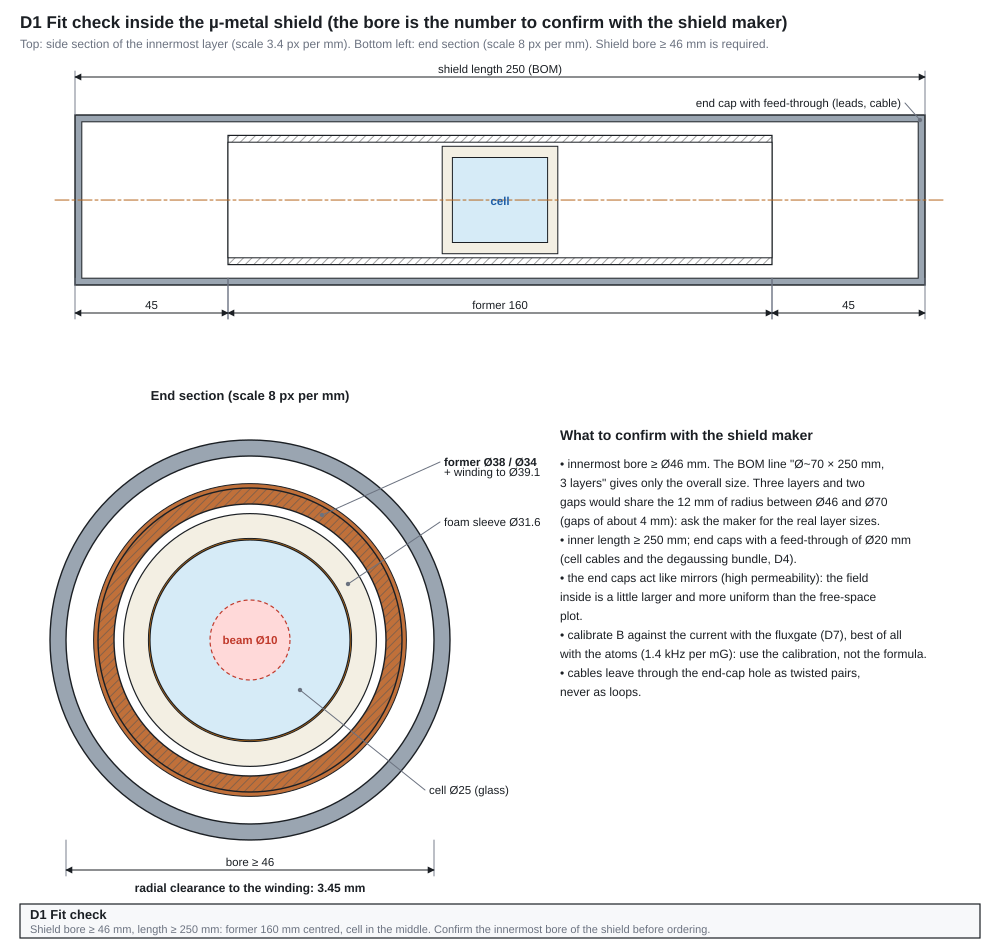
Build steps
- Get the shield data. Ask the maker, or read the drawing, for the innermost bore, the inner length and the end-cap feed-through. The former needs a bore of at least Ø46 mm (the former plus 3.45 mm of radial clearance), an inner length of at least 250 mm, and the winding then stays about 55 mm from each end cap. A smaller bore needs a thinner former and a new field calculation, because the winding radius enters directly.Check You have the bore and the length in writing.
- Make the former. Follow the former drawing. Cut the groove as one right-hand helix, 0.60 wide and 0.40 deep, rounded at the edges (a sharp edge cuts the enamel). Scribe a light ring at the mid-plane and mark the cable end (the end where the leads leave).Check wall 2.0 ± 0.1 mm; ten pitches measure 36.0 ± 0.2 mm; the groove starts and ends 70.2 mm from the mid-plane (140.4 mm long); no burrs.
- Prepare the wire and the rig. Cut off 5.9 m for the helix with its start lead (0.8 m of lead + 4.98 m of helix + a little spare) and keep the rest of the reel for the two return wires (0.2 m each) and the finish lead (0.8 m). Put the spool on a friction brake so that the wire runs under 50 to 100 g of pull. Handle it only with plastic or brass tools.Check the wire runs without kinks and the enamel is not scraped.
- Wind the helix. Start at the cable end (z = −70.2 mm). Lay 3 turns at 1.8 mm pitch, then 36 turns at 3.6 mm, then 3 turns at 1.8 mm; the finish is at z = +70.2 mm. Count aloud and mark every tenth turn with a dot of marker on the former.Check exactly 42 turns. The resistance of the helix alone is about 0.44 Ω (4.98 m at 0.0876 Ω/m).
- Fix the end turns. Put a drop of cyanoacrylate or epoxy on the first and last 3 turns and on every tenth turn. Do not glue the other turns: glue stress on the wire shifts it in the groove.Check no turn can move when you push it with a plastic tool.
- Lay the two return wires. At the far end, scrape the enamel from the helix end and from one end of each return wire, twist the three together and solder (one joint). Lay the returns along the axis at 90° and 270° (see the winding plan), tape them every 40 mm with polyimide tape, and at the cable end solder them together into the finish lead.Check resistance from start lead to finish lead: 0.58 Ω ± 0.03 (the two returns in parallel add only 0.007 Ω).
- Twist the leads. Twist the start and finish leads together, about one twist per 20 mm, and solder the plug of D3 (LD OUT). Mark the start lead red.Check no loop of area in the leads: they run as one twisted pair.
- Check the field outside the shield. Put the former on a plastic stand a metre away from steel, with the fluxgate (D7) at the centre. Apply +10.00 mA, record the reading, apply −10.00 mA and record again. The difference removes the Earth field (about 0.4 G) and the sensor offset.Check B(+10 mA) − B(−10 mA) = 67.8 mG ± 5 % (3.39 mG/mA × 20 mA).
- Mark the field direction. With the same measurement, note which current polarity gives a field along the beam direction (z, away from the laser) and engrave or label “B+” on the former.Check the label agrees with the fluxgate sign.
- Install and calibrate in the shield. Push the former into the innermost layer with the cell stack (D2) inside, centre it with the two spacer rings and close the end caps with the leads through the feed-through. After the degauss (D4), put the fluxgate plate (D7) in place of the cell and measure B against I at ±5, ±10 and ±15 mA.Check a straight line B = k·I; use the measured k (a few per cent above 3.39 mG/mA, because the shield pulls the flux in) in every later experiment, not the formula. The fluxgate scale is good to ± 2 %: confirm k with the atoms (the EIT line moves 1.4 kHz per mG).
Tests before use
| Test | How | Pass |
|---|---|---|
| Resistance | multimeter at the plug (4-wire if possible) | 0.58 Ω ± 0.03 |
| Turn count and pitch | count the dots; calliper across ten pitches | 42 turns; 36.0 ± 0.2 mm |
| Field per mA, free space | fluxgate at the centre, reverse the current | 3.39 mG/mA ± 5 % |
| Field per mA, in the shield | fluxgate plate in place of the cell, after the degauss | linear to 1 %; write down k |
| Heating | run 15 mA for 10 minutes | the coil stays at room temperature (P = I²R = 127 µW) |
Mistakes to avoid
- Steel tools, steel screws or nickel-plated connector shells near the former or the shield: they magnetise and the field no longer follows the formula.
- A helix without the two return wires, or with only one: the transverse field is 0.10 mG per mA, 1.5 mG at 14.7 mA.
- Winding under too much pull: the groove edge cuts the enamel and two turns short together.
- Different pitch at the ends: the error over the cell rises from 0.20 % to 0.42 %.
- Loose, untwisted leads that move: the loop area changes and the field at the cell follows.
- Innermost shield bore ≥ Ø46 mm, inner length ≥ 250 mm and an end-cap feed-through of Ø20 mm. The BOM line “Ø~70 × 250 mm, 3 layers” gives only the overall size: three layers and two gaps would share the 12 mm of radius between Ø46 and Ø70 (gaps of about 4 mm).
- Cell dimensions and the stem from the vendor drawing (D2).
- Who cuts the groove and with which pitch tolerance: the drawing needs ± 0.05 mm per pitch.
Cell stack: cell, heater, thermistor, foam and tubes
Holds the cell on the axis at 55 to 65 °C with no magnetic field of its own
The cell sits on the axis in the middle of the solenoid, warm enough for an optical depth near 10 (55 to 65 °C), with a heater that makes no magnetic field, a temperature sensor the ITC502 can read, and enough insulation to hold the temperature with about 2 W. There is no metal near the cell. The heater is built as a bifilar pair (go and return side by side) so that its field cancels; a purchased foil is allowed only if its layout is paired and the test below passes.
What the design does
- NTC and not Pt100. The ITC502 resolves 1 Ω on its thermistor range: a Pt100 gives 2.6 K per ohm, a 10 kΩ NTC gives 14 mK per ohm at 65 °C.
- Foam sleeve and two Delrin tubes hold the temperature with 0.9 to 2.1 W and keep the whole stack on the axis: tube 63 + sleeve 34 + tube 63 = 160 mm, the length of the former.
- Diode in series with the heater. A resistor cannot cool: when the controller asks for cooling it would reverse the current, which heats again and runs away. The diode lets only one polarity through; its orientation is found with the dummy-load test of D3.
- Unpaired heater wire is a coil. One unpaired turn of 0.54 A at the end of the heater gives 97 mG at the cell centre, 2000 times what we can accept. That is why the pattern is paired.
Parts and materials
| Item | Qty | Specification | Note |
|---|---|---|---|
| Rb vapour cell | 1 | Ø25 × 28 mm, 25 mm vapour path, quartz, enriched ⁸⁷Rb + 10 Torr Ne (BOM C01) | ask for a side stem of at most 15 mm: the stem is the cold spot where Rb condenses |
| Kapton (polyimide) film | 2 pieces | 50 µm thick, 85 × 30 mm | one under, one over the wire |
| Constantan or manganin wire | 2 m | enamelled, Ø0.20 mm (15.6 Ω/m) | 0.77 m makes 12 Ω; the rest is spare |
| NTC thermistor | 2 | 10 kΩ at 25 °C, B = 3900 to 3950 K, glass bead or small epoxy bead | one spare; leads thin and non-magnetic |
| Thermally conductive epoxy | small | non-magnetic: check that the data sheet lists no iron or nickel filler | for the NTC only |
| Polyimide tape | 1 roll | 6 mm | holds the wire pair on the film |
| Foam sleeve | 1 | ID 25.6, OD 31.6, length 34; silicone or melamine foam rated to at least 100 °C | cut from 3 mm sheet and wrapped, or bought as a tube |
| Delrin tubes | 2 | OD 33.7, ID 26.5, length 63, with a 2 × 2 mm groove along the outside of one tube | the groove carries the leads to the cable end |
| Cables | 2 | heater: 2 × 0.5 mm² twisted; NTC: screened twisted pair AWG 26 to 24 | wired in D3 |
| Diode | 1 | 1N5400 (3 A, 50 V) | in series with the heater (D3) |
Tools
- Scalpel and a plastic ruler, a flat plastic board to build the heater on, brass or plastic tweezers.
- Soldering iron with a fine tip, multimeter, a thin brush for the epoxy, polyimide tape.
- Cure the epoxy as its data sheet says (room temperature, or a warm plate below 80 °C); no heat gun near the cell.
Drawings
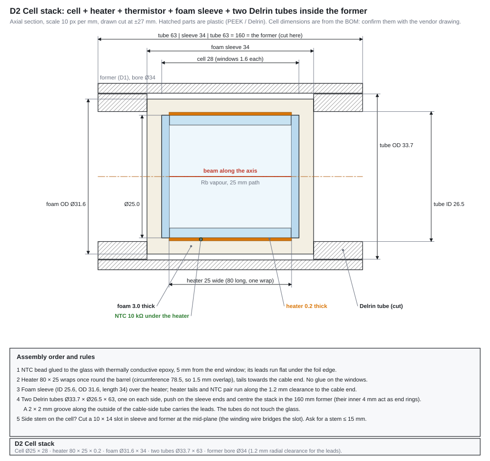
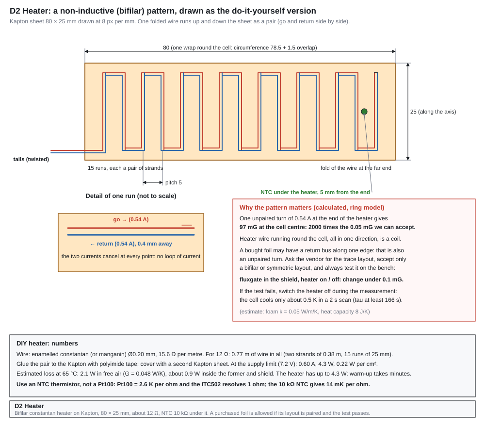
Build steps
- Measure the cell. Callipers on the real cell: diameter, length, window thickness, and the position and length of any stem. Keep the cell in its box until the heater is ready; never touch the windows.Check diameter 25.0 ± 0.3 mm, length 28 ± 0.5 mm; the stem (if any) is at most 15 mm.
- Draw the heater pattern. On the Kapton film mark 15 runs of 25 mm at a pitch of 5 mm (drawing “Heater”). Use a pencil, not a marker with metal ink.Check a sheet of 80 × 25 mm with 15 marked runs.
- Lay the bifilar pair. Fold 0.77 m of wire in the middle. Lay the folded wire so that every run is a pair (go and return side by side, 0.4 mm apart), with the fold at the far end. Tape every run with polyimide tape, leave the two tails at the near end 150 mm long and twist them.Check resistance of the pair: 12 ± 1 Ω.
- Close the heater. Put the second Kapton film over the wire and press with a warm plate (below 80 °C) or tape it down. Add the NTC bead: glue it with thermally conductive epoxy to the cell glass 5 mm from one window, with its leads flat under the foil edge, and cure it.Check the NTC reads about 10 kΩ at 25 °C (about 8 kΩ at 30 °C); no short to the heater wire (> 10 MΩ).
- Wrap the cell. Wrap the heater once round the barrel (circumference 78.5 mm, so 80 mm gives 1.5 mm overlap) with the tails towards the cable end. Fix with two turns of polyimide tape. No glue on the windows.Check the foil sits flat; no wire crosses a window.
- Add the foam sleeve. Slide the foam sleeve (ID 25.6, OD 31.6, length 34) over the heater. Run the heater tails and the NTC pair along the sleeve in the 1.2 mm clearance towards the cable end.Check sleeve ends 3 mm beyond each window; leads not pinched.
- Add the two tubes. Push one tube on each side against the sleeve ends: they centre the stack in the 160 mm former. Put the groove of the cable-side tube over the leads.Check the stack is centred; the tubes do not touch the glass.
- Test the heater on the bench. Before the stack goes in the shield: connect the heater and the NTC to the ITC502 as in D3, set I TEC LIM to 0.60 A and T SET to 2.100 kΩ (about 65 °C for this NTC), switch the output on, and watch the NTC reading fall.Check the NTC falls steadily to about 2.1 kΩ and the controller settles in about 15 minutes; at 65 °C the heater takes about 0.28 to 0.42 A (3.3 to 5.0 V across the 12 Ω pair).
- Magnetic test of the heater. Before the real cell is used, wrap the finished heater round a plastic dummy tube of the cell’s size (Ø25, bore at least 20 mm) and push the fluxgate board of D7 through the tube with the centre of its detection coil in the middle of the heater. Put this in the closed shield, switch the heater current on and off (use the maximum current, not the working current) and read the field.Check the field changes by less than 0.1 mG.
- Install. Slide the stack into the former and the former into the shield. Mark the cable end and keep the NTC and the heater cables twisted as two separate pairs.Check cell centre at the mid-plane of the former (mark it with a pencil ring on the foam).
Tests before use
| Test | How | Pass |
|---|---|---|
| Heater resistance | multimeter on the two tails | 12 ± 1 Ω, stable |
| Insulation | heater to NTC and to the glass | > 10 MΩ |
| Heater field | fluxgate in the shield, heater current on and off | change < 0.1 mG |
| Temperature hold | set 65 °C, wait 30 minutes | NTC reading steady to ± 1 Ω (≈ ± 14 mK) |
| Warm-up | from room temperature to 65 °C | in a few minutes at the supply limit; cooling time constant 3 to 6 minutes |
Estimates on this page: the loss at 65 °C (2.1 W in free air, 0.9 W inside the former and the shield) and the time constants (166 and 379 s) come from a simple model (foam k = 0.05 W/m/K, h = 8 W/m²K, heat capacity 8 J/K). Design for the larger loss; measure your own stack and replace them.
Mistakes to avoid
- A heater wound as one coil, or a foil with a return bus along one edge: that is an unpaired turn (97 mG at the cell from 0.54 A). Always run the on-and-off test.
- A Pt100 on the ITC502: 1 Ω is 2.6 K, so the temperature would step by 2.6 K.
- No diode: a resistor heater runs away when the controller tries to cool.
- A cold window: Rb condenses on the coldest glass. The coldest point should be the stem, not a window; ask for a stem and keep the windows inside the foam sleeve ends.
- Thermistor leads running through the heater field region as a loop: twist them and keep them flat.
- The real cell: diameter, length, window thickness, stem position and length. The drawing assumes Ø25 × 28 mm with no stem; a stem needs a 10 × 14 mm slot in the sleeve and the former.
- Foam and epoxy: the temperature rating and the absence of iron or nickel in the data sheets.
- A bought foil heater: ask for the trace layout and accept only a paired or symmetric pattern, then run the on-and-off test.
ITC502 plugs and cables
The 15-pin and 9-pin plugs for the second ITC502: cell heater and solenoid
The lab owns two ITC502 controllers. The first drives the DFB laser. The second can drive the cell heater on its TEC OUT jack (15-pin) and the solenoid on its LD OUT jack (9-pin): both are low-noise and already in the lab. Neither jack comes with a cable, so each plug is wired by hand. The drawings follow the pin numbering of the ITC500 manual (chapters 1.9.1 and 1.9.2) and show the solder-cup side of the plug, the way you hold it while soldering.
What the design does
- Heater: TEC pins 5, 6, 7 are tied together as “+”, pins 13, 14, 15 as “−” (the manual says always use all three pins), the thermistor on pins 4 and 3. The diode is in the heater + wire.
- Solenoid: anode pin 8 (polarity CG) and ground pin 3 carry the current. Pins 9 and 6 can sense the voltage at the coil (optional). A link between pins 1 and 5 is the interlock: without it the output does not switch on.
- Never plug a laser diode into the coil cable. It has no monitor-diode wiring. Label the plug.
Parts and materials
| Item | Qty | Specification | Note |
|---|---|---|---|
| D-sub 15-pin plug, solder cup | 1 | with a plastic hood and cable clamp (no metal hood) | male or female: look at the TEC OUT jack of your unit; if the jack shows pins you need the plug with sockets |
| D-sub 9-pin plug, solder cup | 1 | with a plastic hood and cable clamp | same rule for the LD OUT jack |
| Heater cable | 2 m | 2 conductors 0.5 mm² (AWG 20), twisted | red and black |
| Thermistor cable | 2 m | screened twisted pair, AWG 26 to 24, with drain wire | shield connected at the ITC502 end only |
| Coil cable | 2 m | screened, 2 × 0.35 mm² twisted for the coil + 2 × 0.14 mm² twisted for the sense pair | a 4-core screened microphone cable also works |
| Diode | 1 | 1N5400, 3 A, 50 V | orientation set by the dummy-load test below |
| Bare tinned wire, heat-shrink | small | for the links 5–6–7 and 13–14–15 and the 1–5 interlock | sleeve every link |
| Dummy loads for the tests | 1 set | 10 Ω 5 W, 10 kΩ 1 %, 100 Ω 0.1 % | keep them in the same box as the plugs |
Tools
- Soldering iron 25 to 40 W with a fine tip, flux-cored solder, helping hands.
- Wire strippers, heat gun or lighter for the sleeving, multimeter.
- A permanent marker and labels: every plug gets a label.
Drawings
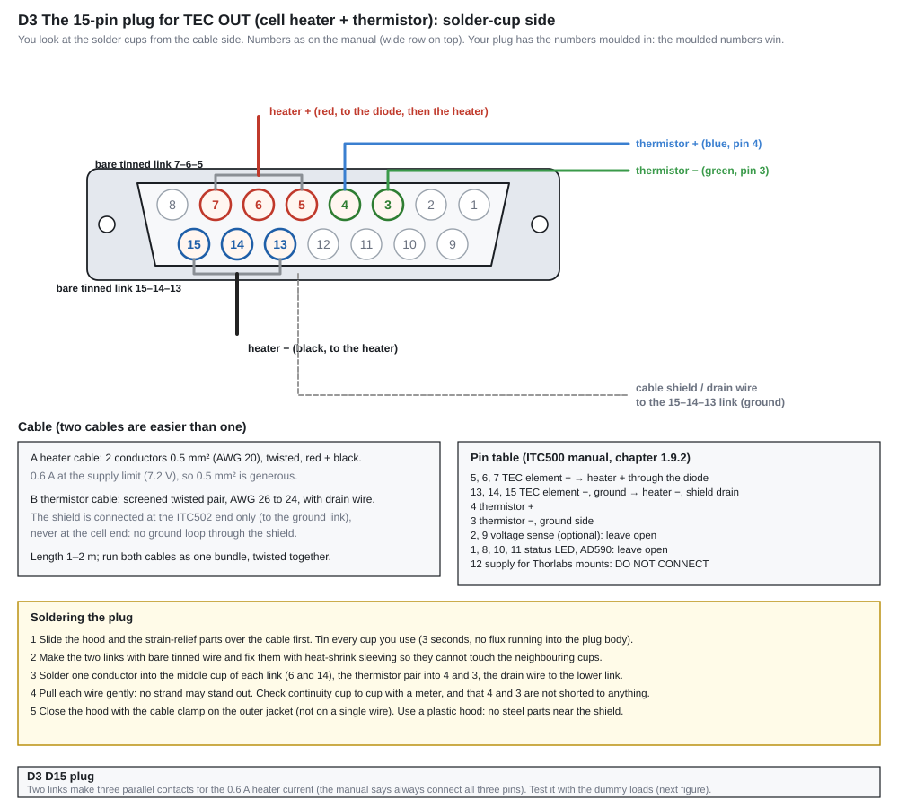
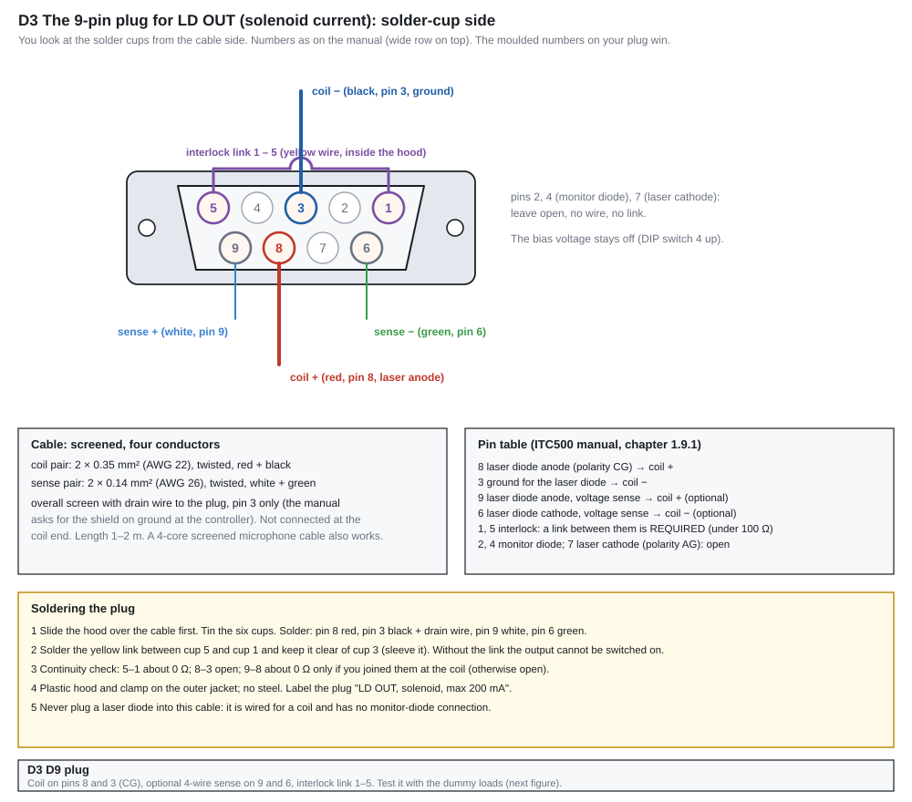
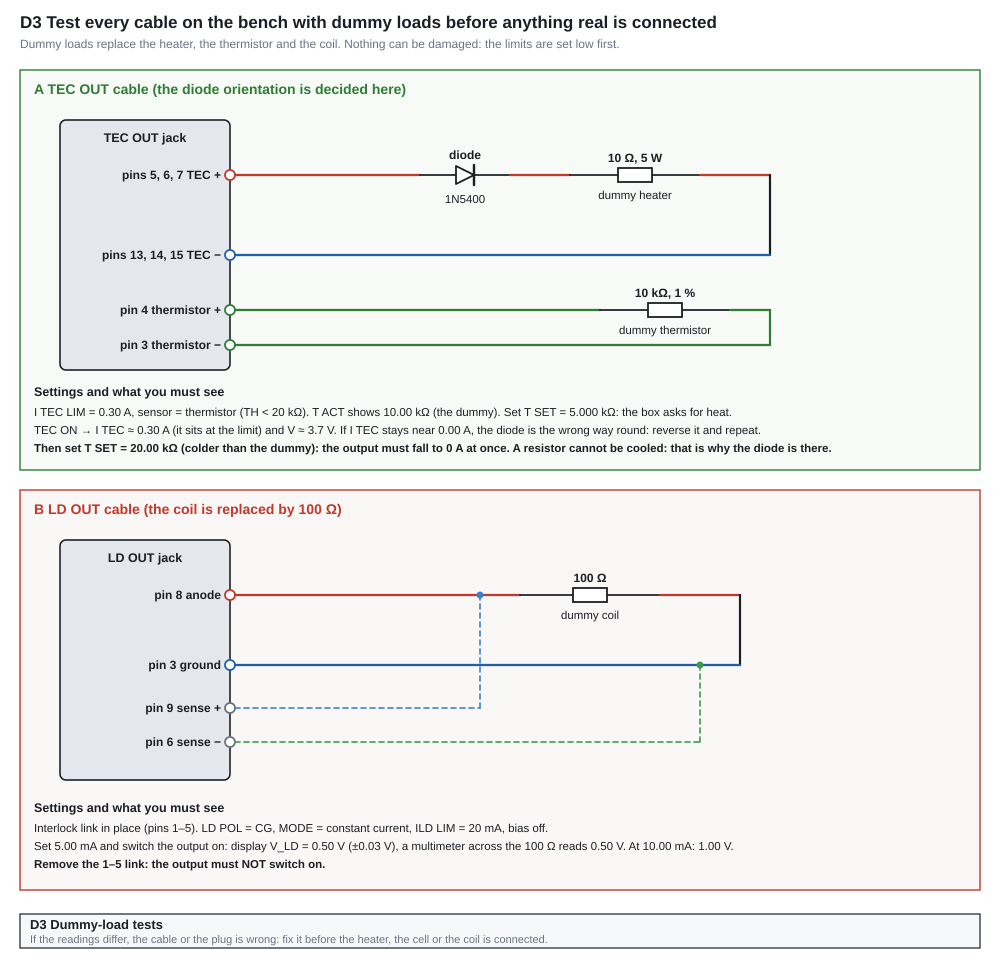
The same plugs are also drawn on the real rear panel of the ITC502 in the wiring figures of the Questions and answers (section 09).
Build steps
- Read your own rear panel. Look at the TEC OUT and LD OUT jacks of the second ITC502: pins or sockets, and the number engraved beside the first pin. The figures show the numbering of the manual; the numbers moulded into your plug win.Check you know which gender to buy and which row is “wide”.
- Make the two links. For the 15-pin plug cut two bare tinned wires and fix them with sleeving: one joins cups 7, 6 and 5, the other cups 15, 14 and 13.Check the links do not touch the neighbouring cups.
- Solder the heater cable. Red conductor to the middle cup of the 7–6–5 link (cup 6) through the diode; black to cup 14. Put the diode anywhere along the red wire with sleeving, anode towards the controller for the first try.Check continuity cup 6 to the red wire end through the diode in one direction only.
- Solder the thermistor cable. Blue to cup 4, green to cup 3, drain wire to the 15–14–13 link. Do not connect the shield at the cell end.Check cup 4 and cup 3 are not shorted to anything; at the far end the NTC reads 8 to 10 kΩ at room temperature (25 to 30 °C).
- Close the 15-pin plug. Pull each wire gently, close the plastic hood with the clamp on the outer jacket (not on a single wire).Check no strand stands out.
- Solder the 9-pin plug. Tin the six cups. Red (coil +) to pin 8, black (coil −) to pin 3 with the drain wire, white to pin 9, green to pin 6. Solder a yellow link between pin 5 and pin 1 and sleeve it. Pins 2, 4 and 7 stay open.Check pin 5 to pin 1 reads about 0 Ω; pin 8 to pin 3 is open.
- Label the plugs. Label “TEC OUT, cell heater, max 0.6 A” and “LD OUT, solenoid, max 200 mA”.Check the labels are on the plugs.
- Run the dummy-load tests. Follow the test figure. For the TEC cable use the 10 Ω load and the 10 kΩ and set the I TEC limit to 0.30 A; for the LD cable use the 100 Ω with the limit at 20 mA. Decide the diode orientation here.Check the readings of the figure are reached (0.30 A at 3.7 V; 0.50 V at 5.00 mA).
Tests before use
| Test | Expected | If it fails |
|---|---|---|
| TEC cable with 10 Ω and 10 kΩ, T SET 5.000 kΩ, TEC ON | I TEC ≈ 0.30 A, V ≈ 3.7 V | I TEC ≈ 0: reverse the diode and repeat |
| T SET 20.00 kΩ (colder than the dummy) | output falls to 0 A | the diode is the wrong way round or missing |
| LD cable with 100 Ω, 5.00 mA | V_LD = 0.50 V ± 0.03 V (a meter across the 100 Ω agrees) | check pins 8 and 3, then the sense pair |
| Interlock link removed | the output must not switch on | the 1–5 link is shorted elsewhere |
Mistakes to avoid
- Pin numbers read from the wrong side of the plug: the figures show the solder-cup side, mirrored from the front. Trust the numbers moulded into the plug.
- Pin 12 of the TEC OUT jack supplies Thorlabs mounts: do not connect it to anything.
- A shield connected at both ends: a ground loop. Connect it at the ITC502 end only.
- Using the heater with no current limit: set I TEC LIM to 0.6 A first, and I LD LIM to 20 mA first for the coil.
- Jack gender and pin numbering on the real unit: the rear-panel drawing of the manual shows pin dots, which suggests male jacks and so female plugs; check yours.
- The TEC polarity convention (which sign of current the controller calls heating): the diode orientation depends on it, and the dummy-load test settles it.
Degaussing coil and drive
Removes the magnetisation that assembly, shocks and the Earth’s field leave in the shield
Opening the shield lets the Earth’s field (about 50 µT) magnetise the inner layers a little; after reassembly a remanent field of 10 to 100 nT remains (Twinleaf). Our line needs less than 20 nT (0.2 mG). Degaussing removes it: drive the layers into saturation with an oscillating field, then bring the amplitude down to zero slowly and smoothly. The coil has to pass through the shield so that the flux circulates round the wall of every layer, and it should be spread round the circumference: a toroidal winding through the bore and back outside in at least three groups.
What the design does
- Toroidal winding. The field in the wall of a layer at radius r is H = N·√2·I / (2π r): 193 A/m peak at 1 A rms in the outer layer. Mu-metal saturates at a few tens of A/m, so 1 A rms is already well above saturation in every layer, and the procedure uses up to 2 A rms.
- Find the knee, then ramp. Twinleaf: start low and raise the amplitude step by step; saturation shows as the coil current rising sharply above an applied voltage. Then use an amplitude above the knee and ramp down linearly in 100 to 300 s.
- 50 Hz has a limit. The skin depth in mu-metal at 50 Hz is only about 0.4 mm (relative permeability near 2 × 10⁴), less than the wall of a 1 mm layer. The mains drive works best on thin layers; for thick layers use the low-frequency alternative (1 to 10 Hz).
Parts and materials
| Item | Qty | Specification | Note |
|---|---|---|---|
| Variac (autotransformer) | 1 | 0 to 250 V, at least 1 A | a second-hand lab variac is fine |
| Isolating transformer | 1 | 230 V to 24 V, at least 100 VA (4 A on the secondary) | core and frame to mains earth |
| Series resistor | 1 | 4.7 Ω, 25 to 50 W, wire-wound, aluminium housing | on a heatsink, away from the shield |
| Fuses and holders | 2 | 2 A slow-blow on the mains side, 3.15 A slow-blow on the 24 V side | panel-mount fuse holders |
| Mains switch, cord, box | 1 set | double-pole switch, mains cord with earth, closed earthed metal box, cable clamp | no loose conductor in the box |
| Ammeter | 1 | AC clamp meter or a DMM with a 10 A AC range | in series with the coil |
| Coil wire | 24 m | flexible copper 0.5 mm² (AWG 20), thin insulation (PTFE or thin silicone), outer Ø ≤ 1.3 mm | plus 1.5 m for the leads |
| Ties | 10 | Velcro straps or tape | no steel clips near the shield |
| Plugs and sockets | 2 pairs | 4 mm banana plugs and sockets | the coil is unplugged from the drive after each run |
Tools
- Wire strippers, soldering iron, crimp tool for the mains terminals, insulation tester or the highest resistance range of a DMM.
- A helper to hold the shield while you thread the wire, a spool holder, a tape measure.
Drawings
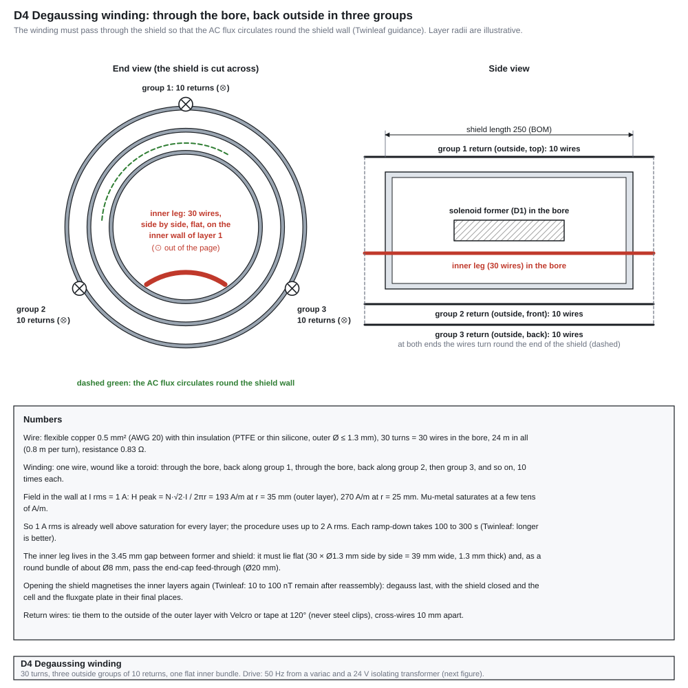
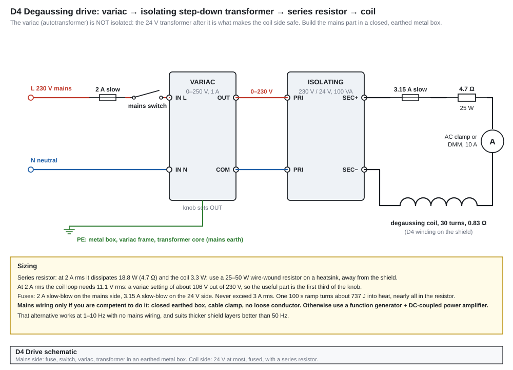
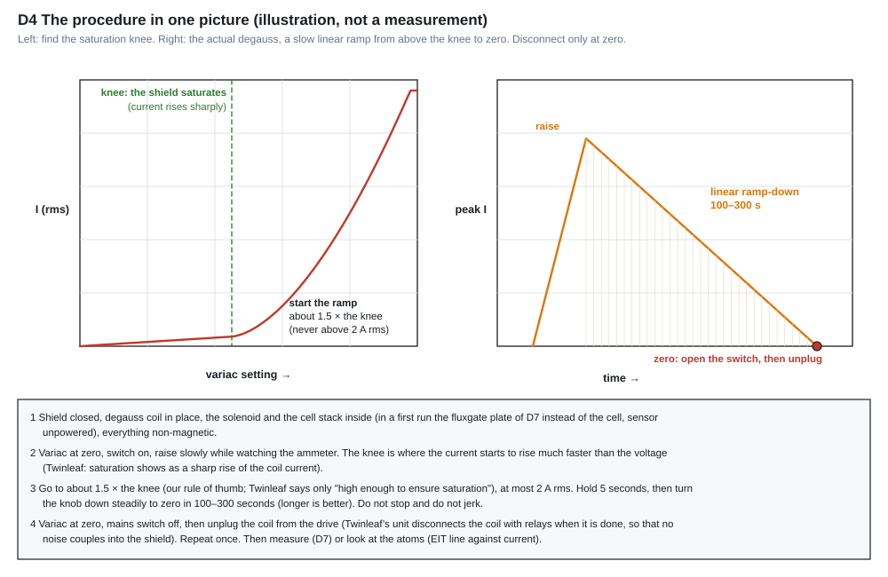
Build steps
- Measure the shield. Length of the layers, the outer radius, and the end-cap feed-through. The inner bundle (30 wires of Ø1.3 mm, flat: 39 mm wide, 1.3 mm thick) has to lie in the 3.45 mm gap between the former and the bore, and the round bundle (about Ø8 mm) has to pass the feed-through. If the feed-through is smaller, use a thinner wire or fewer turns and raise the current (the ampere-turns matter: 30 turns × 2.8 A peak = 85 A).Check the feed-through is at least Ø20 mm.
- Wind the coil. Cut 24 m of wire and leave 0.8 m for each lead. Pass the wire through the bore, back along the outside in group 1, through the bore again, back in group 2, then group 3, and repeat until there are 30 passes through the bore (10 turns per group).Check 30 wires in the bore, 10 on the outside in each group.
- Lay and tie the bundles. Lay the 30 inner wires flat against the inner wall, tie them every 50 mm with polyimide tape, and tie the three outside groups to the outer layer at 120° with Velcro, cross-wires 10 mm apart.Check resistance of the coil 0.83 Ω ± 0.05; no wire touches a steel part.
- Build the drive box. With the cord unplugged: mains live through the 2 A fuse and the switch to the variac IN L; the neutral to IN N; the transformer primary across the variac OUT and COM; the secondary through the 3.15 A fuse, the 4.7 Ω resistor and the ammeter to the two output sockets. Join mains earth to the box, the variac frame and the transformer core.Check earth to box, variac frame and core: below 0.5 Ω; mains to box: above 10 MΩ.
- Dry test on the bench. Connect the coil in the air, away from the shield, switch on with the variac at zero and raise it slowly.Check the current rises linearly with the setting; 2 A rms at a setting of about 106 V; the resistor is only warm after a minute.
- Find the knee. With the shield closed and everything inside non-magnetic, raise the variac slowly from zero while you read the ammeter. The knee is where the current starts to rise much faster than the voltage.Check you can write down the variac setting of the knee.
- Degauss. Go to about 1.5 times the knee (our rule of thumb; Twinleaf only says “high enough to ensure saturation”), at most 2 A rms. Hold 5 seconds, then turn the knob down steadily to zero in 100 to 300 seconds. Do not stop and do not jerk.Check the ammeter falls smoothly to zero.
- Disconnect. Variac at zero, mains switch off, then unplug the coil from the drive. Twinleaf’s commercial unit disconnects the coil with relays when it is finished, so that no noise couples into the shield.Check the coil is open-circuit.
- Repeat once and measure. Repeat the degauss, then read the field with the fluxgate plate (D7) or by looking at the atoms (the EIT line against the coil current, reversed once).Check two runs in a row give the same field to ± 0.1 mG.
Tests before use
| Test | How | Pass |
|---|---|---|
| Earth and insulation | multimeter, plug out | earth to box, frame and core < 0.5 Ω; L and N to box > 10 MΩ |
| Fuses | look at the ratings | 2 A slow on the mains side, 3.15 A slow on the 24 V side |
| Linearity | current against variac setting | straight line to 2 A rms |
| Coil | resistance at the plug | 0.83 Ω ± 0.05 |
| Repeatability | two degausses in a row, same sensor orientation | the field differs by < 0.1 mG |
Mistakes to avoid
- Stopping or jerking the knob during the ramp: the last small oscillation leaves the magnetisation behind. Turn it down smoothly to zero.
- A coil that does not go through the shield: the flux then does not circulate in the wall and the layers are not degaussed.
- Steel clips, steel screws or a steel table leg close to the shield: they re-magnetise it.
- Leaving the coil connected to the transformer: it picks up noise. Unplug it after each run.
- Opening the shield after the degauss: every opening magnetises the layers again. Degauss last, with the shield closed.
Alternative drive without mains wiring
An arbitrary waveform generator makes a sine of 1 to 10 Hz with a slowly decreasing amplitude (for example by amplitude modulation with a ramp), and a DC-coupled power amplifier drives the coil with up to 3 A. The series resistor and the same ammeter are used. An audio amplifier is AC-coupled and can leave a small direct current in the coil, which would magnetise the shield: do not use one. This route also suits thick layers better than 50 Hz.
- End-cap feed-through of Ø20 mm or more for the degaussing bundle and the cell cables. Twinleaf’s guide gives no hole size; ask your shield maker, and whether they supply a degaussing coil or port.
- Layer thickness and number: the skin depth at 50 Hz (about 0.4 mm) against the wall thickness decides whether 50 Hz is enough or the low-frequency drive is needed.
- Whether the fluxgate sensor tolerates the field of the coil: the data sheet of the FLC 100 does not say. Keep it unpowered during the degauss and check its offset afterwards.
Backup current source for the solenoid
Op-amp and MOSFET, 0 to 25 mA, built on perfboard in a metal box
The first choice for the solenoid current is the LD OUT of the second ITC502 (D3): noise below 1.5 µA rms and drift below 10 µA in 24 h. If that unit is not available or not quiet enough, this source is the backup. It is a current sink: an op-amp compares the voltage across a 100 Ω sense resistor with a set voltage from a 2.5 V reference and a 10-turn potentiometer, and a MOSFET carries the coil current, so I = V_set / 100 Ω. A 9 V battery gives the quietest supply.
What the design does
- The sense resistor sets the stability. A 100 Ω metal-film resistor of 0.1 % and 25 ppm/K drifts only 0.38 µA per kelvin at 15 mA.
- The reference sets the rest. The LM4040-2.5 runs from 9 V through 6.8 kΩ (0.96 mA) and the potentiometer loads it by 0.25 mA only.
- A simple test source (battery, 560 Ω and a 100 Ω trimmer, 15 mA) is drawn on the same sheet for a first look; it is not for measurements.
Parts and materials
| Item | Qty | Specification | Note |
|---|---|---|---|
| Op-amp | 1 | OPA188 (zero-drift, single supply 4 to 36 V) | DIP-8 adapter board for the SOIC part |
| Reference | 1 | LM4040-2.5 (2.5 V shunt, TO-92 or SOT-23) | A or B grade for 0.1 to 0.2 % tolerance |
| MOSFET | 1 | BS170 (or 2N7000), TO-92 | check the pin order: BS170 is D-G-S, 2N7000 is S-G-D |
| Sense resistor | 1 | 100 Ω, 0.1 %, 25 ppm/K, metal film or foil | measure it with the DMM and write the value on the box |
| Other resistors | 4 | R1 6.8 kΩ, R2 and R3 1 kΩ, bleed as drawn | metal film, 1 % |
| Potentiometer | 1 | 10 kΩ, 10 turns, wire-wound or cermet, with a turns counter dial | RV1 |
| Capacitors | 2 | C1 1 µF film, 100 nF ceramic at the op-amp supply pins | |
| Battery | 1 | 9 V alkaline or lithium, with a clip; or a linear supply 9 to 12 V | a switching supply adds noise |
| Box and connectors | 1 set | metal box (shielded), two binding posts or a 2-pin socket for the coil, a switch, perfboard | solder every connection: connectors add thermal voltages |
Tools
- Soldering iron, multimeter (6½ digits if possible), oscilloscope with a 1× probe.
- A dummy load of 100 Ω for the first test (the coil is only 0.58 Ω).
Drawing
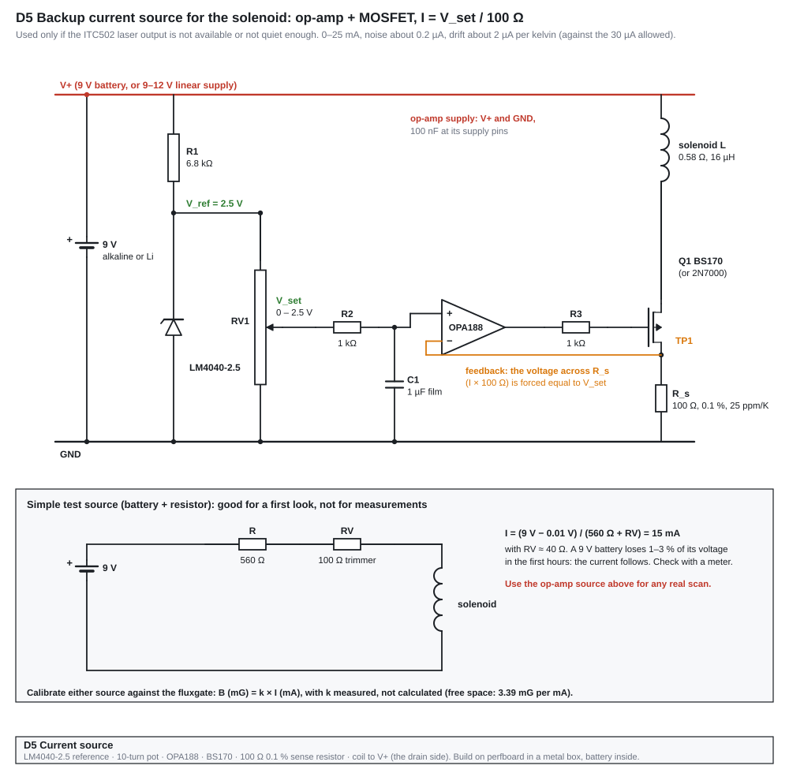
Build steps
- Check the parts. Measure R_s, R1, R2, R3 and the potentiometer with the DMM. Look up the pin order of the MOSFET and of the op-amp board.Check R_s within 0.1 % of 100 Ω.
- Build the reference. V+ through R1 to the LM4040 and to GND. Add the potentiometer between the reference node and GND.Check the reference node reads 2.50 V ± 0.01 V; the wiper runs from 0 to 2.5 V.
- Add the filter and the op-amp. Wiper to R2 (1 kΩ), C1 (1 µF to GND) and to the + input. Put 100 nF at the supply pins of the op-amp, wires short.Check the + input follows the potentiometer within 1 mV.
- Add the MOSFET and the sense resistor. Op-amp output through R3 (1 kΩ) to the gate; source to the sense resistor and to the − input (TP1); the sense resistor to GND; the drain to the coil; the coil to V+.Check with a 100 Ω dummy in place of the coil and V_set = 1.000 V: TP1 reads 1.000 V and the dummy carries 10.00 mA.
- Test with the coil. Replace the dummy by the solenoid. Set V_set = 1.475 V.Check TP1 = 1.475 V; the current from the DMM in series reads 14.75 mA.
- Measure the noise. AC voltage range of the DMM across R_s with the coil connected, then the oscilloscope with a 1× probe.Check below 50 µV rms across R_s (0.5 µA).
- Close the box. Fit the battery, the switch and the coil socket; label the dial setting for 50 mG after the calibration in the shield.Check the box is closed, the shell is grounded to the circuit ground only at one point.
Tests before use
| Test | How | Pass |
|---|---|---|
| Set point | V_set from 0.5 to 2.5 V in steps of 0.5 V, read TP1 and the current | I = TP1 / R_s to 0.2 % |
| Noise | AC range across R_s | < 50 µV rms |
| Drift | log the current for an hour at 14.74 mA | change < 5 µA |
| Battery | run 30 minutes | no change in the current while the battery falls by 0.1 V |
Mistakes to avoid
- The coil in the source leg instead of the drain: the feedback then sees the coil voltage and the current is wrong.
- BS170 and 2N7000 have opposite pin orders: a reversed MOSFET gives a current that does not follow V_set.
- A switching supply or a long cable on the battery side: the noise adds to the field.
- Calibrating B against the current with the fluxgate only: its accuracy is ± 2 % ± 0.3 µT. Calibrate with the atoms (1.4 kHz per mG).
- Whether it is needed: measure the noise of the ITC502 LD OUT first with the dummy load of D3 (a few µA is expected); build this source only if the measurement says so.
Lock-box divider
A 100 : 1 attenuator between the Red Pitaya output and the ITC502 modulation input
The modulation input of the ITC502 changes the laser current by 20 mA per volt: that is 28 GHz of laser tuning per volt. One step of the 14-bit output of the Red Pitaya (4 V span into a high impedance, 0.24 mV) would then move the laser by 6.8 MHz (3.4 MHz if the output is loaded with 50 Ω), and a 5 MHz dither for the lock-in would need 0.18 mV, less than one step. A 100 : 1 divider turns each step into 0.07 MHz and the 5 MHz dither into about 18 mV (about 74 steps).
Parts and materials
| Item | Qty | Specification | Note |
|---|---|---|---|
| Resistor R1 | 1 | 91 kΩ, 1 % or better, metal film | in series with the signal |
| Resistor R2 | 1 | 1 kΩ, 1 % or better, metal film | to ground, sets the ratio |
| Box | 1 | small die-cast aluminium box, about 50 × 50 × 27 mm | one ground |
| BNC chassis jacks | 2 | 9.5 mm holes, soldered centre pin | both shells join through the box |
| BNC cables | 2 | 50 Ω, 0.3 to 1 m | Red Pitaya to the box, box to the ITC502 MOD IN |
Drawing
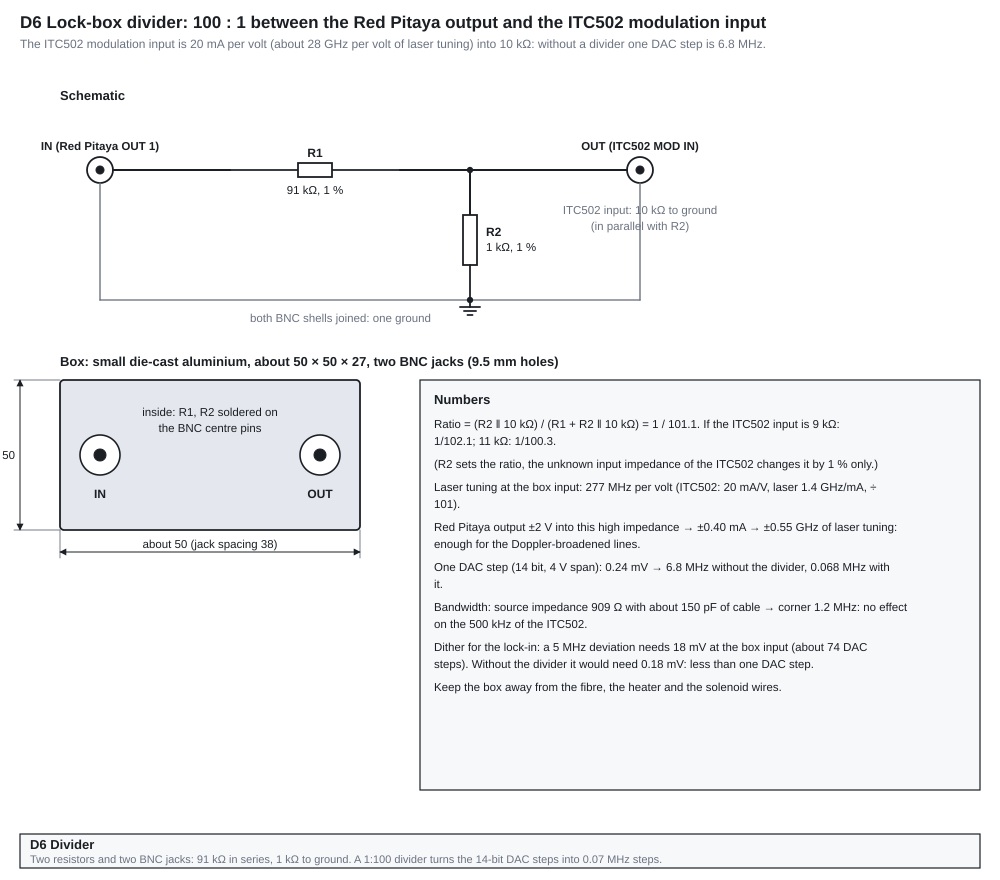
Build steps
- Drill the box. Two 9.5 mm holes about 38 mm apart on one face, deburred.Check both jacks fit and their shells touch the box.
- Solder the resistors. R1 from the centre pin of the IN jack to the centre pin of the OUT jack. R2 from the centre pin of the OUT jack to a ground lug on the box. Keep the leads short.Check the OUT centre pin reads 91 kΩ to the IN centre pin and 1 kΩ to the shell.
- Test with a signal. A generator 1 kHz, 1 Vpp into IN. At OUT with a 1× oscilloscope probe (1 MΩ): ratio 1/92. With a 10 kΩ resistor across OUT instead: ratio 1/101.Check about 10.9 mV with the probe alone and 9.9 mV with the 10 kΩ across OUT.
- Use. Red Pitaya OUT1 to IN, OUT to the MOD IN of the ITC502. Label the box with the ratio.Check the lock-in dither of 18 mV at the box input gives about 5 MHz at the laser.
Mistakes to avoid
- The divider fitted the wrong way round (1 kΩ in series, 91 kΩ to ground): a ratio of about 1/1.1 instead of 1/101, and the laser tunes by gigahertz.
- The box near the fibre, the heater or the solenoid wires: pick-up in the lock loop.
- The unknown input impedance of the ITC502 changes the ratio by only 1 % (for 9 kΩ: 1/102.1; for 11 kΩ: 1/100.3), so it does not matter.
- The input impedance and the sign of the modulation input of your ITC502 (the manual gives 10 kΩ and 20 mA/V): a quick measurement with the DMM and a scope confirms them.
Fluxgate supply, wiring and sensor holder
A quiet 5 V supply, the right five solder pads, and a plate that carries the sensor into the bore
The Stefan Mayer FLC 100 is a bare sensor board: it needs a 5 V supply, a way to read its differential output, and a holder. It measures the field along its long axis only. The data sheet gives ± 100 µT, noise below 3 nT peak-to-peak (0.1 to 10 Hz), zero drift below 2 nT per kelvin and an accuracy of ± 2 % ± 0.3 µT, so it is excellent for differences (coil current reversed, heater on and off, one degauss against the next) and not for the absolute zero: for that, the atoms are better.
What the design does
- Quiet supply. An LM7805 from a linear ±12 V supply (or a 9 V battery and a low-dropout regulator) followed by a 10 Ω and 470 µF filter (corner 34 Hz). The supply ripple at 50 and 100 Hz would otherwise sit in the reading.
- Differential reading. OUT− is a 2.5 V reference and the signal is OUT+ − OUT−: read it with a floating DMM across the two pads, never OUT+ against ground.
- A plate in place of the cell. The PEEK plate carries the board into the former with the centre of the detection coil at z = 0, on the axis, where the atoms will be.
Parts and materials
| Item | Qty | Specification | Note |
|---|---|---|---|
| Fluxgate sensor | 1 | Stefan Mayer FLC 100 (BOM C09) | five solder pads on a 0.1 inch grid: 0V, +5V, SYNC, OUT−, OUT+ |
| Regulator | 1 | LM7805, TO-220, 1 A | no heatsink needed (0.05 W) |
| Capacitors | 4 | C1 0.33 µF, C2 10 µF + 0.1 µF, C3 470 µF | low-ESR electrolytics |
| Resistors | 2 | R_f 10 Ω, R_b 1 kΩ | 1 % |
| Cable | 2 m | screened, two twisted pairs (5 V and 0 V; OUT+ and OUT−), outer Ø ≤ 3 mm | must pass the feed-through |
| Sensor plate | 1 | PEEK, 220 × 28 × 4, pocket 45 × 14.4 × 3, two M3 nylon screws | PEEK, Delrin or PETG |
| Wire for the pads | 1 m | AWG 30, flexible | soldered straight to the pads, no header inside the shield |
| Box and connector | 1 | small metal box with a connector for the cable | the connector stays outside the shield |
Tools
- Soldering iron with a fine tip, magnifier, multimeter with a differential input (floating), oscilloscope.
- Machine or hand tools for the plate (non-magnetic bits and screws).
Drawing
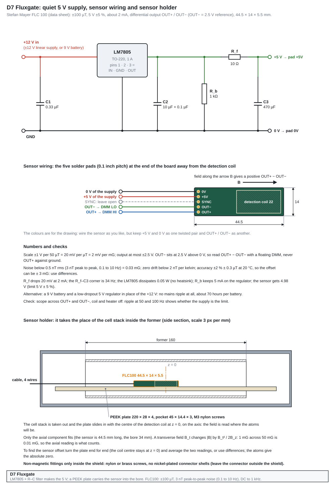
Build steps
- Build the supply. On perfboard as in the figure. Power it from the +12 V of a linear supply or a battery.Check the output reads 4.98 V with a 2.5 kΩ dummy load (2 mA); no more than 100 µV ripple on the scope.
- Wire the sensor. Solder four AWG 30 wires to the pads 0V, +5V, OUT− and OUT+; leave SYNC open. Twist 0V with +5V and OUT− with OUT+. Fix the wires with a drop of epoxy for strain relief.Check continuity pad to wire end; no short between neighbouring pads.
- First power-up, outside the shield. Away from steel, switch on and read OUT+ − OUT− with the DMM. Turn the sensor end for end.Check the reading changes sign and by about twice the component of the Earth’s field along its axis (20 mV per µT, up to ± 2.5 V).
- Mount the plate. Screw the sensor into the pocket with nylon screws so that the centre of the detection coil is at the middle of the plate. Mark the direction of the arrow B (positive output) and the cable end.Check the arrow is marked.
- Use in the shield. Take the cell stack out, slide the plate in with the coil centre at z = 0, close the shield, and read the field with the coil current at +I and −I (D1 calibration) or after a degauss (D4).Check B(+I) − B(−I) = 2 k I with the same sign convention each time.
- Find the offset. Turn the plate end for end (the coil centre stays at z = 0) and average the two readings, or use the atoms.Check the two readings differ by twice the offset.
Tests before use
| Test | How | Pass |
|---|---|---|
| Supply | DMM at the sensor pads | 4.98 V ± 0.05 V |
| Earth-field flip | turn the sensor end for end | sign change; size as expected for the Earth’s field |
| Noise | average the DMM reading for 10 s with the shield closed | scatter < 0.1 mV (0.05 mG) |
| Scale | apply +10 mA and −10 mA in the solenoid | 67.8 mG difference ± 5 % |
Mistakes to avoid
- Reading OUT+ against ground: the 2.5 V of OUT− is then in the reading and the sign of the field is lost.
- Steel or nickel-plated parts in the plate: screws, a connector shell, header pins. They magnetise or distort the field.
- Long untwisted leads and a noisy supply: 50 and 100 Hz ripple on the signal.
- Taking the absolute reading for the residual field: the sensor offset can be ± 3 mG. Use differences.
- Pad order and sign on your board: the data sheet drawing shows the pads at the end away from the detection coil, from top to bottom 0V, +5V, SYNC, OUT−, OUT+, with the arrow B pointing towards the coil. Compare with the board in your hand before you apply power.
- What the strong field of the degaussing coil does to the sensor: the data sheet is silent. Keep it unpowered during a degauss and check its offset afterwards.
- The shield bore against the plate width (28 mm) and the cable (Ø ≤ 3 mm).
RF chain and bias box
The wiring and the small control box that make the Mini-Circuits parts work
Each AOM arm needs 80 MHz at about +30 dBm (1 W). The chain is the synthesizer (R01), an RF switch (R04), a step attenuator (R03), an amplifier (R02), a coupler for monitoring (R06) and the AOM. The Mini-Circuits parts need things the BOM does not list: the switch needs +5 V and −5 V and a TTL gate, the attenuator needs +3 V and −3 V and six logic lines, the amplifier +24 V at 0.9 A. This part builds a small bias and control box that makes the four rails from ±12 V, holds the DIP switches of the attenuators and the gate inputs, and gives the wiring of the whole chain, with a commissioning order that protects the amplifier and the AOM.
What the design does
- Levels. With the synthesizer at 0 dBm the switch (insertion loss 1.3 dB typ at 80 MHz) and the attenuator (1.5 dB typ at 0 dB) leave −2.8 dBm, and the amplifier (gain 29 to 34 dB, typical 33) brings it to about +30 dBm, 1.05 W. The amplifier takes at most +10 dBm at its input, and the attenuator sets the working level from 0 to 31.5 dB in 0.5 dB steps.
- Safe state first. The DIP switches start with all six bits on (31.5 dB). The attenuator is wired in direct mode (latch enable tied high), so its state follows the switches and, at power-up, is whatever they say.
- Gate polarity. With the TTL input of the switch high, OUT 1 is off and OUT 2 is on (datasheet). The AOM sits on OUT 2, so gate high means RF on, and OUT 1 gets a 50 Ω load.
- Rails from ±12 V. The ±5 V come from an LM7805 and an LM7905; the +3.0 V and −3.1 V from an LM317 and an LM337 fed from the raw ±12 V, because 5 V − 3 V leaves only 2 V of head-room, which the adjustable regulators do not have.
Parts and materials
| Item | Qty | Specification | Note |
|---|---|---|---|
| Regulators | 4 | LM7805, LM7905, LM317, LM337 (TO-220) | the pin order differs between the four: follow the data-sheet pin names |
| Resistors for the rails | 4 | 240 Ω, 330 Ω (LM317); 120 Ω, 180 Ω (LM337), 1 % | give 2.985 V and -3.137 V |
| Rail capacitors | 12 | 0.33 µF at each input, 10 µF + 0.1 µF at each output | |
| LEDs and resistors | 4 + 4 | LED 3 mm with 2.2 kΩ | one per rail |
| DIP switches | 2 | 6-way, 2.54 mm pitch | one bank per attenuator |
| Pull-down resistors | 12 | 10 kΩ | six per bank |
| Gate input parts | 2 + 2 | 100 Ω series and 10 kΩ to ground, one set per switch | plus two BNC chassis jacks |
| Attenuator control cable | 2 | Mini-Circuits ZX76-WP+: shielded, 1.5 m, plug for J1 and flying leads; wire colours are in the J1 table of the control drawing | it saves making the 10-pin plug; read the outline drawing of the data sheet if you make your own |
| Box | 1 | aluminium, 160 × 120 × 55 | panel drawing below |
| Binding posts | 3 | +12 V, GND, −12 V | rear panel |
| Perfboard, wire, heatsink angle | 1 set | 100 × 70 mm perfboards, 0.35 mm² wire, small aluminium angle for the 7805 and 7905 | |
| SMA cables | 8 | male-male, 0.3 to 0.5 m, same on both arms | BOM K02 |
| 50 Ω loads | 4 | SMA terminators | unused switch outputs, the dry runs |
| Mini-Circuits parts | 2 sets | ZASWA-2-50DR+, ZX76-31R5-PN-S+, ZHL-1-2W-S+ (SMA), ZFDC-20-4-S+ (SMA) | the BNC models have a different suffix: check |
Tools
- Soldering iron (fast, for the DC pins of the attenuator: they overheat, Mini-Circuits AN-40-010), multimeter, oscilloscope with 50 Ω inputs or feed-through terminators.
- Drill, step drill and a nibbler for the DIP cut-outs, SMA wrench.
- A spectrum analyser or an RF power meter is useful but not needed: the coupler and the scope are enough.
Drawings
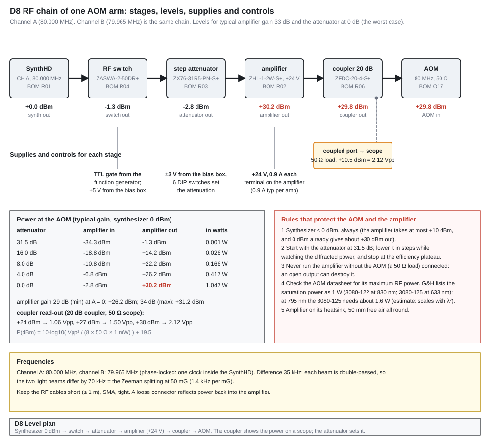
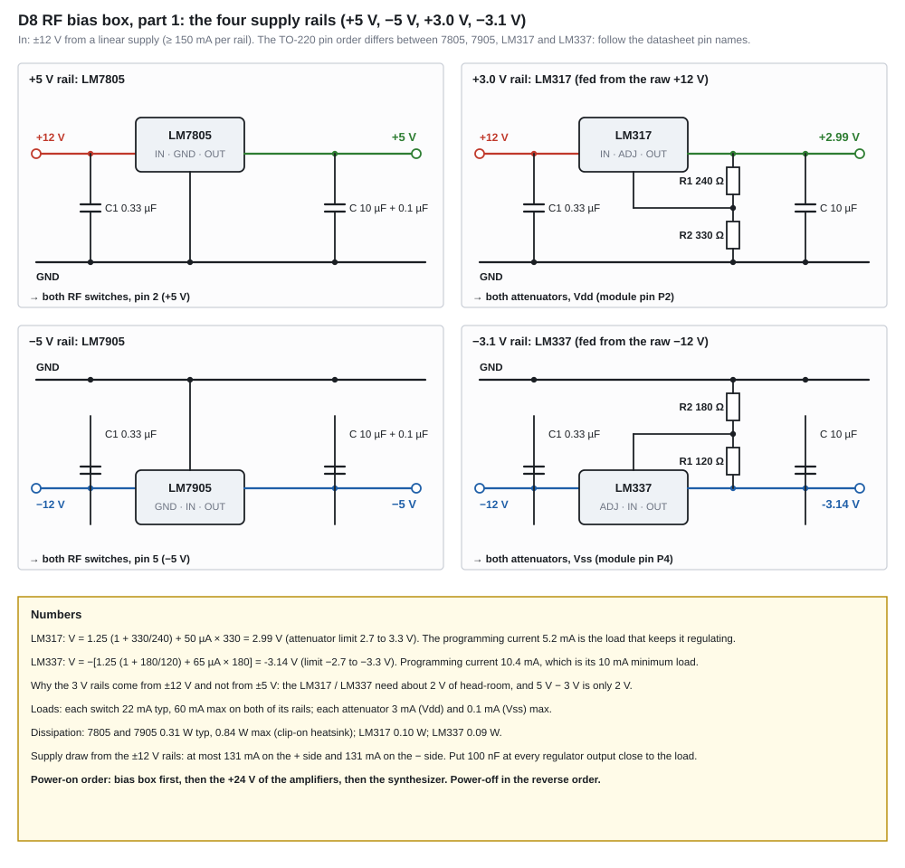
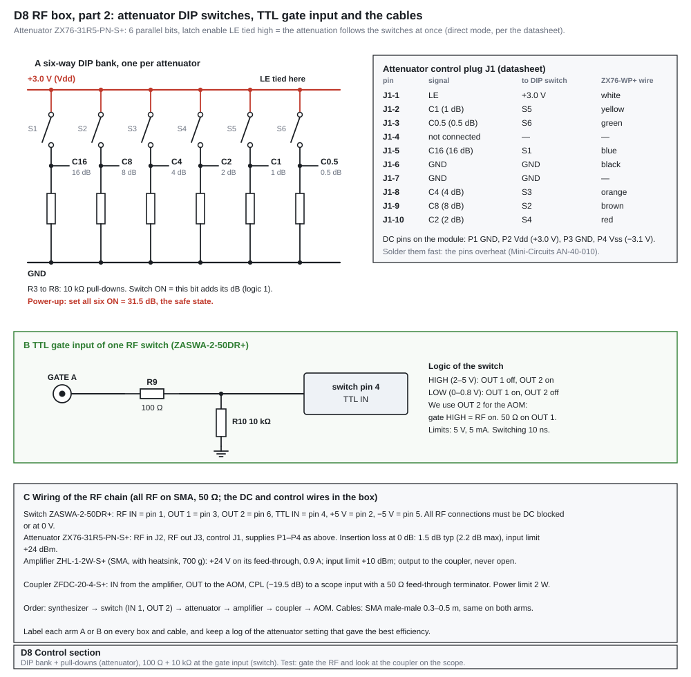
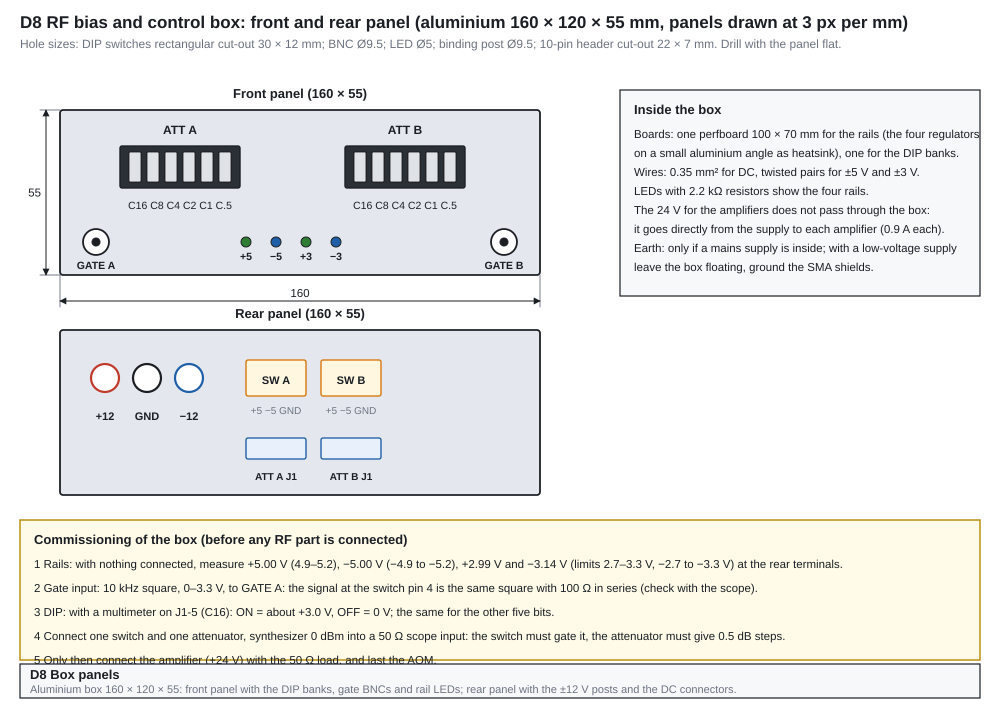
Build steps
- Check the parts against their data sheets. Read the pin tables of the four regulators and of the three Mini-Circuits boards; write the pin numbers on the drawings.Check ZASWA-2-50DR+: RF IN pin 1, OUT 1 pin 3, OUT 2 pin 6, TTL pin 4, +5 V pin 2, −5 V pin 5. ZX76: LE J1-1, C1 J1-2, C0.5 J1-3, C16 J1-5, GND J1-6 and J1-7, C4 J1-8, C8 J1-9, C2 J1-10; P2 Vdd, P4 Vss.
- Build the four rails. On perfboard as in the supply drawing; the 7805 and 7905 on a small aluminium angle. Power from ±12 V, nothing connected yet.Check +5.00 V (4.9 to 5.2), −5.00 V (−4.9 to −5.2), +2.99 V and −3.14 V (limits 2.7 to 3.3 V and −2.7 to −3.3 V).
- Load the rails. Put 220 Ω (switch) and 1 kΩ (attenuator) dummies on the rails.Check the voltages move by less than 20 mV.
- Build the control part. The DIP banks and the pull-downs as in the control drawing; LE of each attenuator tied to the +3.0 V rail; the 100 Ω and 10 kΩ at each gate input.Check with all six switches ON the six control lines read +3.0 V; OFF reads 0 V.
- Drill and assemble the box. Follow the panel drawing: rectangular cut-outs for the DIP banks, Ø9.5 for the BNCs, Ø5 for the LEDs, Ø9.5 for the binding posts. Mount the boards on stand-offs.Check no wire touches a regulator tab; the box lid closes.
- Wire the chain. Follow the wiring list: synthesizer to switch IN, switch OUT 2 to attenuator, attenuator to amplifier, amplifier to coupler IN, coupler OUT to the AOM, coupler coupled port to a scope input through a 50 Ω feed-through. A 50 Ω load on switch OUT 1.Check every SMA connector is tight; the cables are 0.3 to 0.5 m.
- Commission in this order. (1) bias box alone, (2) gate and DIP with the multimeter, (3) one switch and one attenuator with the synthesizer at 0 dBm into a 50 Ω scope input, (4) the amplifier with a 50 Ω load, (5) the AOM last. Attenuator at 31.5 dB at every power-up.Check the switch gates the signal; the attenuator gives 0.5 dB steps; the coupler shows the level of the table.
- Label and log. Label each arm A or B on every box and cable, and write down the attenuator setting that gave the best diffraction efficiency.Check a log sheet next to the bench.
Tests before use
| Test | How | Pass |
|---|---|---|
| Rails | DMM at the rear terminals, no load | +5.00, −5.00, +2.99, −3.14 V |
| Attenuator steps | synthesizer 0 dBm, 50 Ω scope or power meter, each bit on and off | 0.5, 1, 2, 4, 8, 16 dB within 0.2 dB |
| Gate | 10 kHz square 0 to 3.3 V on GATE A | RF on the scope follows the gate; rise/fall about 10 ns |
| Amplifier | 50 Ω load, attenuator 31.5 dB then lowered | level follows the table: +14.2 dBm at 16 dB, +30.2 dBm at 0 dB (typical) |
| Coupler read-out | scope at the coupled port, 50 Ω | +24 dBm: 1.06 Vpp; +27 dBm: 1.50 Vpp; +30 dBm: 2.12 Vpp |
| Heating | amplifier at +30 dBm for 10 minutes | warm, not hot; no smell |
Mistakes to avoid
- An open or shorted amplifier output: the data sheet says an open load can damage it and derates the maximum input by 20 dB. Always have the AOM or a 50 Ω load connected.
- Powering the amplifier before the bias box, or the synthesizer before the amplifier: use the order bias box, +24 V, synthesizer; and the reverse to switch off.
- The synthesizer above 0 dBm: 0 dBm already gives about +30 dBm out, and the amplifier takes at most +10 dBm in.
- DC on an RF line: the switch and the attenuator both require the RF ports to be held at 0 V or DC-blocked.
- Overheating the DC pins of the attenuator when soldering; or soldering the wrong rail to the wrong pin (P2 Vdd +3 V, P4 Vss −3 V).
- Mixing the two arms: label them, and keep the 35 kHz difference between 80.000 and 79.965 MHz in the synthesizer, not in the amplifiers.
- Part numbers for SMA. The BOM lines R02 and R06 named the BNC models ZHL-1-2W+ and ZFDC-20-4+; they now name the SMA models ZHL-1-2W-S+ and ZFDC-20-4-S+, which the drawings use. Check the connector letters on your order.
- DC on the RF lines. Check that the SynthHD output and the AOM input are DC-blocked or at 0 V, because the switch and the attenuator require it.
- The AOM’s maximum RF power (not on the pages that were read): the amplifier can give 1.05 W at the attenuator’s 0 dB setting.
- The lock offset. The double-pass AOMs add 160 MHz and the SAS arm has no AOM: the guide still needs a way to offset the lock by 160 MHz (for example an AOM in the SAS arm).
AOM yaw platform and the Bragg set-up
A micrometer on an 80 mm lever sets the Bragg angle to 0.1 mrad; then the double pass is aligned
An AOM diffracts well only when the beam meets the sound fronts at the Bragg angle θB = λf / 2v: 7.57 mrad (0.43°) at 795 nm and 80 MHz, with v = 4.2 mm/µs (Gooch & Housego data for the 3080 family). The acceptance of a 1.5 mm beam is only about 0.5 mrad, so the AOM needs an angular adjustment of about 0.1 mrad about the vertical axis. A micrometer pushing a tail 80 mm from the pivot gives 0.125 mrad per 10 µm division and ±81 mrad of range. After the platform, the double pass is aligned: a quarter-wave plate, the f = 100 mm lens as a cat’s eye, a retro mirror, a razor blade that stops the 0th order, and the polarizing beamsplitter that picks the returned beam.
What the design does
- Lever and micrometer. A carrier plate turns on a brass pivot; the micrometer spindle pushes its tail and a spring plunger pushes back, so there is no play. One division (10 µm) at 80 mm is 0.125 mrad, about a fifth of the Bragg angle, so the maximum can be found by hand.
- Cat’s eye. The lens puts the retro mirror at its focus, so a change of the RF frequency (which changes the deflection angle) does not walk the returning beam. With f = 100 mm the two orders are 1.5 mm apart at the mirror; a razor-blade edge placed between them on a small stage stops the zeroth order.
- Polarization. The quarter-wave plate is crossed twice, so the returned beam is turned by 90° and the polarizing beamsplitter sends it out of the arm.
Parts and materials
| Item | Qty per arm | Specification | Note |
|---|---|---|---|
| Base plate | 1 | aluminium 150 × 70 × 10, M6 holes on the 25 mm grid | drawing |
| Carrier plate | 1 | aluminium 60 × 50 × 6 with an 80 mm tail | AOM screws to it |
| Pivot | 1 | M4 brass shoulder screw | no steel |
| Micrometer head | 1 | 0 to 13 mm, flat tip, 10 µm divisions, with a clamp bracket | locks with its own clamp |
| Spring plunger or small spring | 1 | brass or stainless (non-magnetic grade) | keeps the tail on the spindle |
| Shims | 4 | aluminium 0.5 and 1 mm | set the AOM aperture to the beam height (40 mm) |
| Post and holder | 1 | Ø12.7 post on a post holder | standard hardware |
| Cat’s-eye optics | 1 set | lens f = 100 mm (AC254-100-B), retro mirror in a KM100T mount, quarter-wave plate in a rotation mount, razor blade on a small translation stage | BOM O08, O01, O02, O06, O07 |
| Polarizing beamsplitter | 1 | cage cube CM1-PBS252 | BOM O03 |
| SMA cable | 1 | short and flexible | must not pull on the platform |
Tools
- Drill press or mill, M6 and M4 taps, calliper, a reamer for the pivot.
- IR viewer card, optical power meter (E05), two irises, the oscilloscope with the photodiode.
Drawings
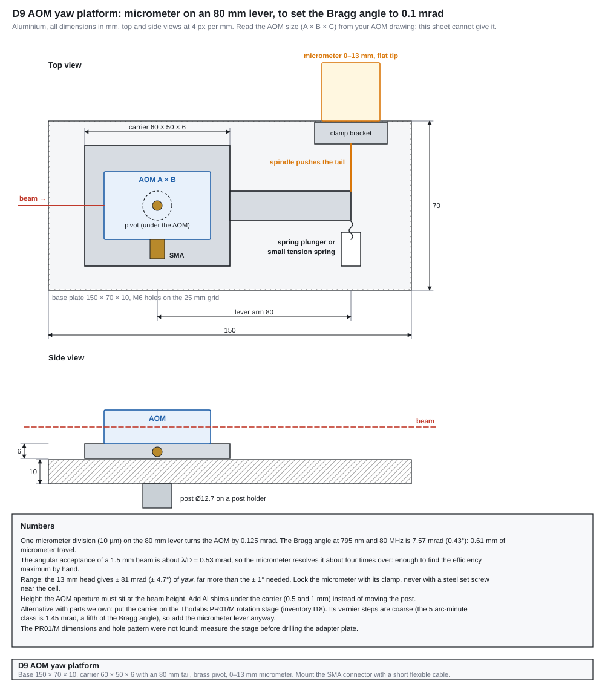
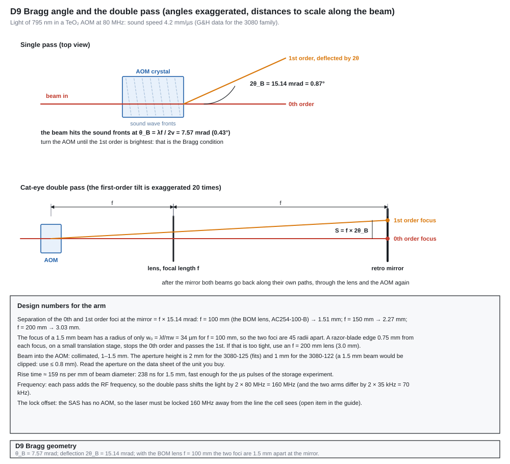
Build steps
- Read the AOM drawing. Housing size (A × B × C), the height of the aperture above the base, the position of the RF connector, the mounting holes, the maximum RF power. The platform drawing uses a 44 × 28 mm footprint as a placeholder.Check you have the real numbers on paper.
- Make the plates. Cut the base and the carrier from aluminium, drill the pivot hole (Ø4.1) in the middle of the carrier, the M4 holes for the AOM, and the M6 holes of the base on the 25 mm grid. Deburr.Check the carrier turns without play on the pivot.
- Fit the micrometer. Clamp the micrometer in its bracket on the base at the top edge so that its spindle touches the tail 80 mm from the pivot; fit the spring plunger on the other side of the tail.Check the spindle and the plunger hold the tail with light force.
- Mount the AOM. Screw the AOM to the carrier with nylon or brass screws and a thin shim set so that its aperture is at the beam height (40 mm). Plug in the SMA cable with some slack.Check the aperture centre is at 40 mm ± 0.5 mm.
- Find the first order. Beam Ø1 to 1.5 mm, collimated, through the middle of the aperture. RF at 80 MHz with the attenuator at 16 dB. Turn the micrometer slowly: the first order appears 1.5 mm per 100 mm off the zeroth.Check a bright first-order spot on the IR card.
- Maximise, then raise the RF. Maximise the first-order power with the micrometer, then lower the attenuator in steps and stop at the plateau.Check single-pass efficiency of about 80 % or more (measure with the power meter).
- Build the cat’s eye. Put the lens one focal length (100 mm) from the retro mirror, the quarter-wave plate between the AOM and the lens, and the razor blade at the mirror plane between the two foci; set the plate at 45°.Check the first order hits the mirror centre; the blade stops the zeroth order only.
- Close the double pass. Walk the retro mirror until the returned beam retraces the incoming one through the irises; set the polarizing beamsplitter so that the returned beam leaves through the side port.Check the returned beam is on the output axis; its polarization is turned by 90°.
- Measure and tune. Measure the double-pass efficiency and trim the plate angle and the RF level. Change the RF by ± 5 MHz.Check the output spot moves by less than 0.1 mm at 1 m (the cat’s-eye property); efficiency of 40 to 60 % overall is typical.
- Lock and log. Clamp the micrometer and write the setting on the platform.Check the setting is on the label.
Tests before use
| Test | How | Pass |
|---|---|---|
| Angle resolution | micrometer one division | a visible change of the first-order power; ≈ 0.125 mrad |
| Single-pass efficiency | first-order power / input power at the plateau | ≈ 80 % or more |
| Zeroth order blocked | IR card behind the blade | no light past the blade in the first-order path |
| Return | irises on the input path | the returned beam passes both irises |
| Frequency tracking | change the RF by ± 5 MHz | output spot moves < 0.1 mm at 1 m |
The G&H listing of the 3080-125 gives a 2 mm aperture, 415 to 900 nm, 4.2 mm/µs, 80 MHz, 1 W saturation RF power at 633 nm and 0.65 W at 515 nm; with the λ² scaling used here, about 1.6 W at 795 nm is an estimate. The 3080-122 has a 1.0 × 2.5 mm aperture and is for 780 to 850 nm; a 1.5 mm beam would be clipped by it. Rise time is about 159 ns per mm of beam diameter (238 ns for 1.5 mm).
Mistakes to avoid
- Adjusting the tilt (pitch) instead of the yaw: the first order walks up and down and the efficiency stays low. The micrometer must turn the AOM about the vertical axis.
- A beam bigger than the aperture: with the 3080-125 keep it under 1.5 mm; with the 3080-122 under 0.8 mm.
- Tightening the clamp of the micrometer with a steel set screw near the cell: use the clamp of the head.
- Hurrying the warm-up: 1 W of RF warms the crystal, and the efficiency drifts for the first 10 to 15 minutes.
- The retro mirror not exactly at the focus: the returned beam then depends on the frequency.
- Which AOM you will receive: model, aperture, size and the position of the RF connector (BNC or SMA). The BOM names the 3080-125 and now follows the G&H listing (415 to 900 nm, 2 mm aperture); the 3080-122 has a 1 mm aperture and would clip a 1.5 mm beam.
- The maximum RF power of the unit.
- The PR01/M dimensions if you use it.
Beam dumps and light-tight covers
Black blocks that absorb every unused beam, and hardboard covers over the AOM arms
The bench has 12 beam dumps: 4 for AOM zeroth orders, 1 for the Glan–Taylor reject, 1 for the SAS pump and 6 for PBS leakage ports. The strongest is the zeroth order of the control arm when its AOM is switched off: about 10 mW with a 15 mW laser, up to about 30 mW with a 40 mW laser. Stray 795 nm light is invisible and it scatters onto the detector. A dump is a black block with a deep bore and a tilted entry, so the beam bounces many times in the matte black wall and dies. Over each AOM arm a hardboard cover keeps room light and draughts out and stray beams in.
Parts and materials
| Item | Qty | Specification | Note |
|---|---|---|---|
| Aluminium block | 12 | 30 × 30 × 45 | one per dump |
| Matte black finish | 1 | black anodising, or Aeroglaze-type paint, or a flat black spray | no gloss |
| Drill | 1 | Ø10 twist drill (118° point) | bore 36 deep |
| Cross hole or clamp | 12 | two M4 screws through the block, or a 30 mm cage clamp | mounting on a post |
| Razor blades | 6 per stack | single-edge blades | only for the razor-blade alternative |
| Hardboard | 2 m² | 3 mm black hardboard (Thorlabs TB4 type) or black foam-core | covers |
| Tape and angles | 1 set | black tape, small plastic or aluminium angle brackets | no steel screws near the shield |
| SM1 tubes | 4 | SM1 × 50 mm and black card with a hole | beam exits and the detector |
Drawings
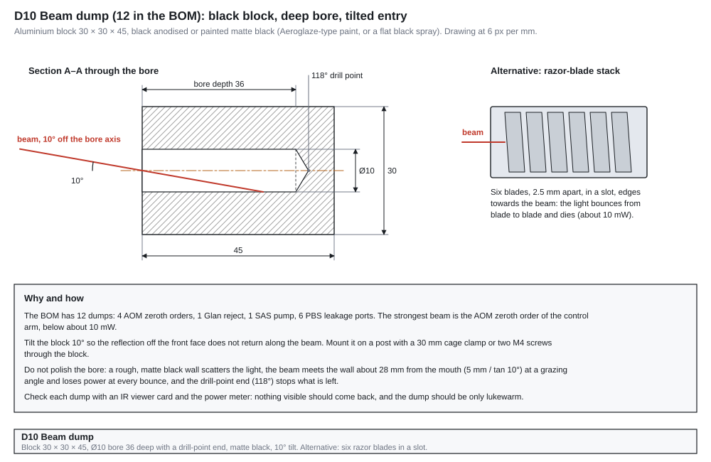
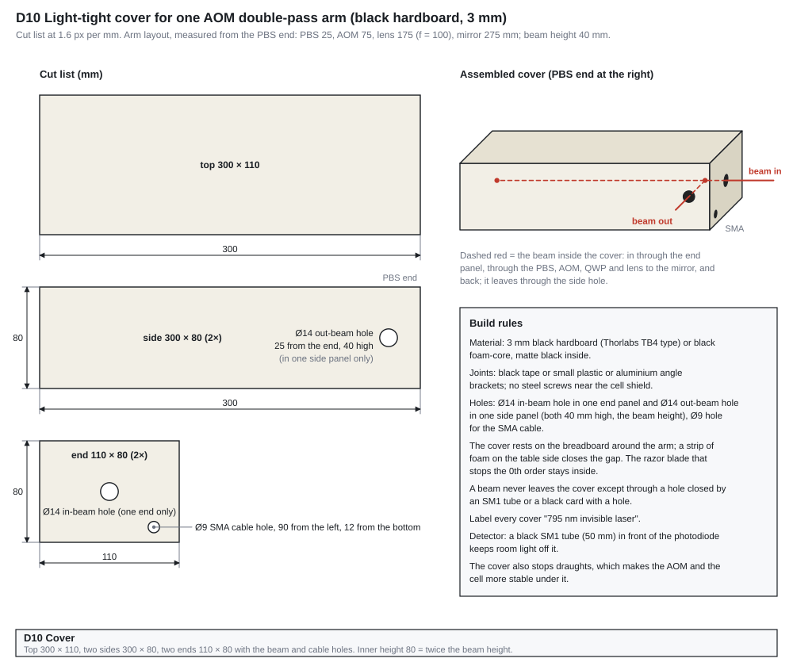
Build steps
- Drill the blocks. Drill the Ø10 bore 36 mm deep; the standard 118° point gives the end. Do not polish or ream the bore.Check depth 36 mm; the wall is rough.
- Blacken. Anodise black or paint matte black, inside and out; let it dry fully.Check no gloss at any angle.
- Make the mount. A cross hole for two M4 screws, or a 30 mm clamp, so that the bore axis is tilted 10° to the beam.Check the front face reflection does not return along the beam.
- Test each dump. Beam in, IR viewer card around the block, power meter near the entrance.Check nothing visible comes back and the block is only lukewarm.
- Cut the covers. From the cut list: top 300 × 110, two sides 300 × 80, two ends 110 × 80; holes Ø14 (in-beam, end panel; out-beam, one side panel; both at 40 mm), Ø9 for the SMA cable.Check the pieces fit around the arm with a 5 mm overlap on the table.
- Assemble and label. Join with black tape or plastic angles; mark every cover “795 nm invisible laser”. A beam leaves a cover only through a hole closed by an SM1 tube or a black card.Check no light leaks when you look with the viewer card.
- Detector tube. A black SM1 × 50 mm tube in front of the photodiode keeps room light off it.Check the dark signal does not change when the room light is switched.
Tests before use
| Test | How | Pass |
|---|---|---|
| Dump | IR card and power meter at the entrance | no returned beam; block lukewarm |
| Cover | IR card around the cover with the arm running | no stray beam outside |
| Detector | room light on and off | no change of the dark signal |
Mistakes to avoid
- A polished or glossy bore: it reflects.
- A dump with its axis along the beam: the front face sends the reflection straight back; tilt it by 10°.
- Steel screws in the covers near the shield.
- Leaving a hole open: a beam leaving the cover is a laser-safety hazard.
- The arm layout: the cover length assumes the PBS 25 mm and the retro mirror 275 mm from the end, with the f = 100 mm lens; change the length if your layout differs.
Open items: what to measure or confirm before cutting or soldering
Everything the sources did not give, in one table
These are the places where the drawings use an assumption. Each one is also in the “Confirm before you start” box of its part. Tick them off in your build log.
| Part | Confirm | Why it matters | How |
|---|---|---|---|
| D1, D2, D4, D7 | Shield: innermost bore ≥ Ø46 mm, inner length ≥ 250 mm, end-cap feed-through ≥ Ø20 mm, number and thickness of layers | The former, the stack, the degaussing bundle and the sensor plate all depend on it. The BOM line gives only “Ø~70 × 250 mm, 3 layers”. | Ask the shield maker for the layer drawing, in writing. |
| D2 | Cell: real diameter, length, window thickness, stem position and length | The heater, the foam and the slot in the former depend on it. | Vendor drawing, then callipers. |
| D2 | Heater layout of any bought foil | An unpaired trace is a coil: one turn of 0.54 A gives 97 mG at the cell. | Ask for the trace layout; run the on-and-off test with the fluxgate. |
| D3 | ITC502 jacks: gender and pin numbering; TEC polarity convention | The plug type to buy and the diode orientation depend on them. | Look at the rear panel; the dummy-load test settles the diode. |
| D4 | Skin depth at 50 Hz against the layer thickness; sensor tolerance to the degauss field | Thick layers need a low-frequency drive; the FLC 100 data sheet gives no limit. | Ask the shield maker; keep the sensor unpowered during the degauss and check its offset afterwards. |
| D7 | FLC 100 pad order and arrow on the board in your hand | Wrong wiring gives no or the wrong sign of signal. | Compare with the data-sheet drawing before power. |
| D8 | Part numbers for SMA: ZHL-1-2W-S+ and ZFDC-20-4-S+ | The BOM named the BNC models (now corrected). | Check the connector letters on the order. |
| D8 | DC on the RF lines (synthesizer output, AOM input) | The switch and the attenuator need 0 V or DC-blocked ports. | Measure with the multimeter; add a DC block if needed. |
| D8, D9 | AOM maximum RF power and connector type; which model arrives | The amplifier can give 1.05 W; the G&H page says 2 mm and 415 to 900 nm for the 3080-125 (the BOM line is now corrected to this). | Data sheet of the unit. |
| D9 | AOM housing size and hole pattern; PR01/M dimensions | The platform drawing uses a placeholder footprint. | Measure before drilling. |
| D8, D9 | Lock offset: the SAS arm has no AOM, the double-pass AOMs add 160 MHz | The laser must be locked 160 MHz away from the line the cell sees. | Add an AOM to the SAS arm or another offset method (open design item). |
| D10 | Arm layout: lens, mirror and PBS positions | The cover length follows from them. | Lay the arm on the board first, then cut. |
Sources and where the numbers come from
Documents read for this page (Oct 2026)
| From | Document | Used for |
|---|---|---|
| Twinleaf | Degaussing Magnetic Shields (guide) ↗ | D1, D4: coil through the shield, three groups outside, saturation search, 100 to 300 s, remanent field 10 to 100 nT |
| Thorlabs | ITC500 series operation manual (ITC502, ITC510), chapters 1.9.1 and 1.9.2 | D3: LD OUT and TEC OUT pin tables, outputs, limits |
| Mini-Circuits | ZASWA-2-50DR+ data sheet (REV. G) ↗ | D8: pins, TTL logic, ±5 V, 22 mA typ, 250 mW, insertion loss 1.3 dB |
| Mini-Circuits | ZX76-31R5-PN-S+ data sheet (REV. F) ↗ | D8: Vdd +3 V, Vss −3 V, J1 pin table, direct mode, +24 dBm |
| Mini-Circuits | ZHL-1-2W+ data sheet (REV. G) ↗ | D8: gain 29 to 32 dB, +33 dBm, +24 V 0.9 A, +10 dBm no damage, open load |
| Mini-Circuits | ZFDC-20-4+ data sheet ↗ | D8: coupling 19.5 dB, 2 W, SMA model -S+ |
| Stefan Mayer Instruments | Magnetic Field Sensor FLC 100 data sheet ↗ | D7: pads, range, scale, noise, offset, size |
| Gooch & Housego | AOMO 3080-125 and AOMO 3080-122 ↗ | D9: aperture, velocity 4.2 mm/µs, saturation power, rise time |
Calculations
- Solenoid field and uniformity: exact ring-by-ring Biot–Savart sum (elliptic integrals), checked against a brute-force sum to 10⁻¹²; the volume is the cell, ρ ≤ 12.5 mm and |z| ≤ 12.5 mm; the shield is not modelled (it raises the field by a few per cent): calibrate in place.
- Heater and thermal numbers: a lumped estimate with foam k = 0.05 W/m/K, h = 8 W/m²K and a heat capacity of 8 J/K, once for the stack in free air (upper bound of the loss) and once as a series chain through the former, the shield gaps and the outside. They are estimates: measure your own stack.
- RF levels: the arithmetic of the data-sheet values (typical gain 33 dB, insertion loss 1.3 dB and 1.5 dB); the coupler read-out is Vpp = √(8 · 50 Ω · 10(P − 19.5)/10 / 1000).
- AOM numbers: θB = λf / 2v with v = 4.2 mm/µs; the saturation power at 795 nm scales with λ² from the 633 nm value (an estimate).
- All numbers in the text and in the drawings come from the same set of parameters, so they agree with each other.
No prices are on this page: costs are kept in the group’s private records.